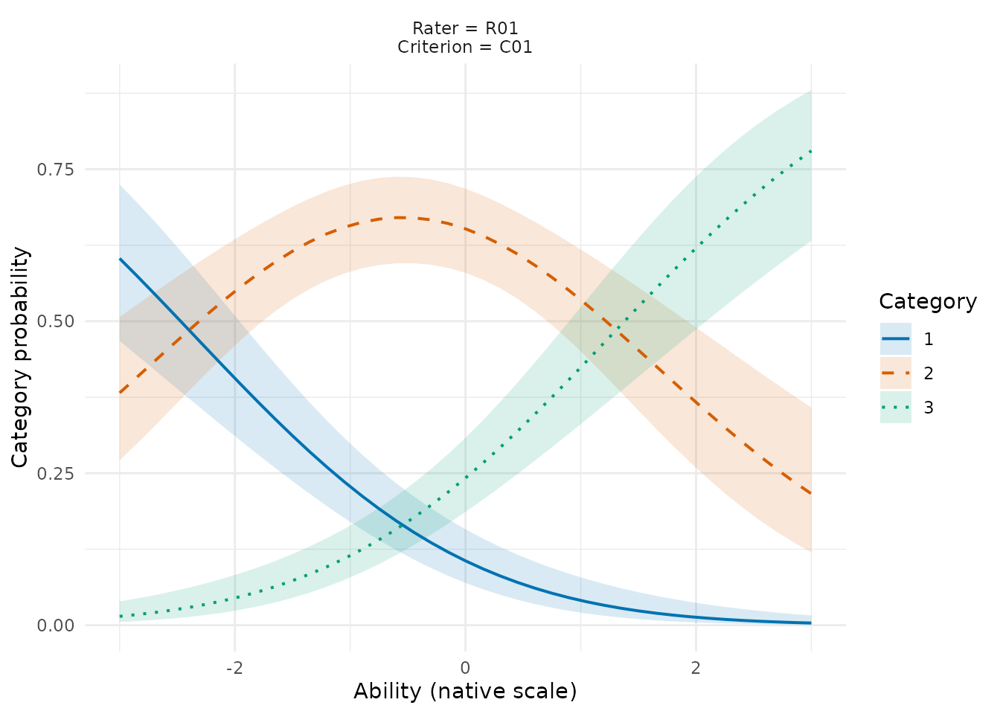
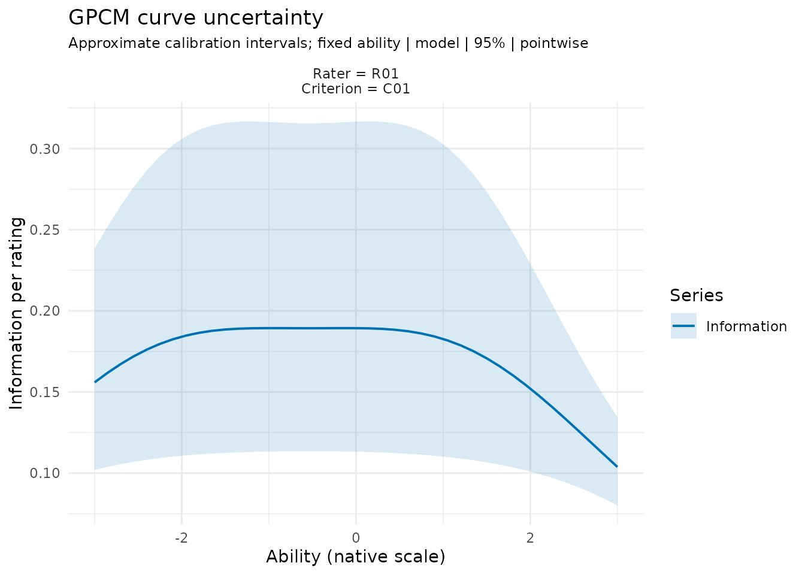
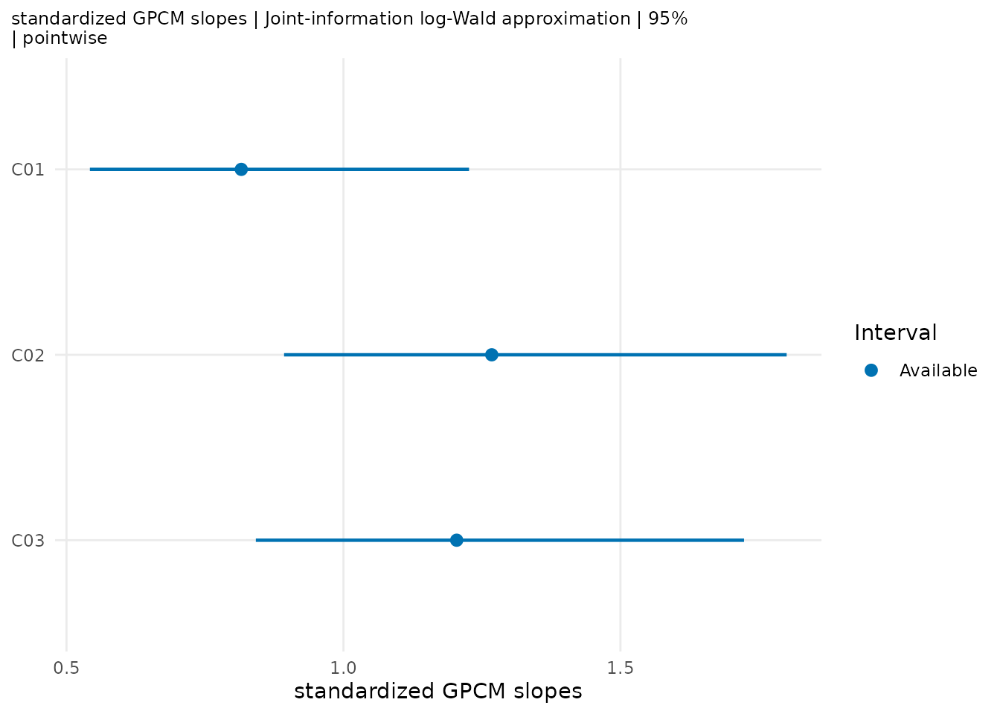

mfrmr includes a Generalized Partial Credit Model (GPCM;
Muraki 1992) in which one selected facet supplies level-specific
discriminations. MML permits a different facet to supply category steps;
JML requires a shared owner. A provisional two-family MML route is
described separately below; its fitted curves do not include intervals.
For the one-family route, MML information criteria can be compared when
the likelihood and local-solution checks pass.
confint(fit, parm = "slopes") provides approximate
relative-slope intervals when its MML checks pass. Explicit options add
standardized slopes, specified comparisons, independent-cluster
covariance and finite-family adjustment. Separate functions provide
fitted-model bootstrap inference and curve intervals. Several downstream
reporting helpers remain restricted because score-side semantics under
free discrimination differ from the Rasch-family case. This vignette
documents which helpers are available, which are not, and what to use as
a substitute when a helper is restricted.
We call this model GPCM and state its structural choices and output availability separately. Unidimensionality is not a reason to give GPCM a special restrictive name. The JML route uses an unpenalized identified joint likelihood. A non-representable slope proposal can be rejected during line search for numerical safety, but that is not a statistical penalty. If the likelihood has a certified recession direction, the finite optimizer iterate is retained only as a numerical trace and the primary result carries an extended-real or typed boundary status.
Follow the result through the existing API
The established GPCM route estimates one slope family. For example, criterion slopes and rater-owned category steps are supported by MML; this does not also estimate rater slopes. The following routes apply to that public model, subject to each function’s checks. A returned number is not by itself evidence that its uncertainty or interpretation is adequate for the intended decision.
| Purpose | Existing route | What to check |
|---|---|---|
| Fit and read the model |
fit_mfrm() → print(fit) →
summary(fit)
|
Estimator, actual optimization engine, slope/step owners, ability scale, numerical status and unavailable estimates. |
| Inspect locations, fit and category use |
plot(fit, type = "wright"), "fit_pathway",
"pathway" or "ccc"
|
These describe locations, fit or response curves; they do not supply slope confidence intervals. GPCM fit screens remain exploratory. |
| Examine slope uncertainty |
confint(fit, parm = "slopes") → print() /
plot()
|
MML only, with separate numerical/inference checks. Profile intervals are an explicit experimental option for one relative slope. |
| Examine response uncertainty in a rating context |
mfrm_curve_intervals(fit, newdata) →
print() / plot()
|
Category probability or information at supplied abilities and facet levels; retain labels for combinations not observed together. |
| Report and reuse selected inference |
mfrm_results(fit, intervals = ...) →
mfrm_report() → export_mfrm_results()
|
Select the result needed for the question; preserve its scale, source, unavailable intervals and interpretation. |
| Score later persons with saved calibration |
extract_mfrm_calibration() →
save_mfrm_calibration() /
load_mfrm_calibration() →
score_mfrm_calibration()
|
Separate source restrictions apply to MML and JML. These are conditional EAP scores; their posterior intervals exclude calibration uncertainty and are not JML slope intervals. |
Use gpcm_capability_matrix() to check availability and
mfrm_calibration_capabilities() for portable source
restrictions. The provisional two-slope-family route
below has a narrower output scope; the one-family table above does not
grant it the same diagnostics or inference. Corrected
JML also has a separate, experimental workflow below. It
provides adjusted point estimates and local root uncertainty, with no
formal structural intervals or ordinary fit tests. Conditional
probabilities, descriptive residuals and new-Person/portable EAP have
separate saved-output routes below. The approximate location SEs and
conditional Person posterior intervals in the ordinary JML workflow
answer different questions.
An explicit corrected-JML workflow
Suppose many learners each receive only a few ratings. Increasing the
number of learners does not necessarily remove the structural bias
caused by estimating an ability from each short rating record.
jml_correction_order adjusts the profile-score equation to
address that bias. It changes the estimation method; the shared-owner
GPCM response model remains the same.
This is an experimental, explicitly chosen analysis. It does not automatically replace ordinary JML or choose a correction order. A larger order may reduce one source of bias while increasing variance or numerical difficulty; existing studies do not establish a universally best order. Choose an order in the analysis plan, examine sensitivity, and do not select by the smallest SE.
# Example for your observed 0:3 ratings, with at least two levels per facet.
# Install the optional nleqslv package before using this route.
# An order of 2 illustrates the syntax; it is not a universal recommendation.
# fit <- fit_mfrm(
# ratings, person = "Candidate", facets = c("Judge", "Criterion"),
# score = "Score", model = "GPCM", method = "JML",
# step_facet = "Criterion", rating_min = 0, rating_max = 3,
# category_policy = "preserve", jml_correction_order = 2,
# jml_correction_sampling = "fixed_rosters"
# )
# summary(fit)$tables
# plot(fit, type = "locations", facet = "Judge")
# as_ggplot(plot(fit, type = "slopes", draw = FALSE))
# res <- mfrm_results(fit)
# mfrm_report(res)Here each Criterion owns both its positive discrimination and its step ladder; Judge and Criterion locations and each ladder are centered, and discriminations have geometric mean one. Names are arbitrary: a different assessment can supply its own facet names. The current scope requires observed integer scores, fixed additive facets and unit-weight rows. It excludes anchors, interactions, separate slope/step owners, corrected RSM/PCM and correlated responses. Sparse assignments are retained as observed; absent cells are not filled with scores. Repeated rows are independent ratings under this model, not a treatment of within-Person local dependence.
Read the output in this order:
- Was a local solution found? The summary records agreement or disagreement across starting values. Numerical agreement does not prove a unique global solution or removal of statistical bias. Unresolved fits retain their attempts without displaying optimizer placeholders as estimates.
- What was estimated? The tables contain adjusted locations, steps and relative slopes. Person abilities are reprofiled at those values; extreme scores have infinite limits. Person standard errors are unavailable.
- What does RootSE mean? It describes local variation around the adjusted equation’s solution. That solution may still be biased for the true structural value. RootSE is therefore not presented as a structural SE with established coverage, and the plots do not invent confidence intervals. When this covariance cannot be computed, the point estimates remain visible alongside the reason.
-
How was allocation sampled?
"fixed_rosters"conditions on assignment counts and centers actual Person contributions within each pattern. It requires at least two Persons per pattern for covariance."random_rosters"instead centers globally when assignment patterns are sampled. This choice must reflect the sampling design; it is not a workaround for sparse data.
The figures show slopes, one selected facet’s locations, or steps as
points (style = "points") or an empirical cumulative
distribution (style = "distribution"). Titles and notes can
be suppressed with show_title = FALSE and
show_notes = FALSE. Reports and saved exports retain the
estimator and interpretation; they do not support ordinary fit tests,
Wright/Pathway maps, likelihood ranking or rater-quality
classifications. New-Person EAP uses the separate scoring workflow
below.
Score a new cohort using the corrected calibration
Suppose next year’s learners use the same rubric and the same
calibrated raters. predict_mfrm_units(fit, new_ratings)
uses only those supplied ratings and the corrected facet, step and slope
values. It adds a normal reference prior to obtain EAP scores. This is a
different question from estimating the original learners’ profile
maxima: even all-minimum or all-maximum responses can have finite EAPs.
JML did not estimate this prior. Consider a substantive alternative with
scoring_prior = list(mean = ..., sd = ...); sensitivity to
that choice matters particularly for short or extreme response
patterns.
To score in another R session without retaining the training data:
# draft <- extract_mfrm_calibration(fit, scoring_quad_points = 101)
# calibration <- freeze_mfrm_calibration(validate_mfrm_calibration(draft))
# save_mfrm_calibration(calibration, "rubric-calibration.rds")
# calibration <- load_mfrm_calibration("rubric-calibration.rds")
# scores <- score_mfrm_calibration(calibration, new_ratings)
# summary(scores)
# plot(scores, type = "interval")
# plot(scores, type = "precision")
# as_ggplot(scores)Here 101 is an example integration order, not a universal accuracy
setting. Each batch is checked against higher-order adaptive
integration. Increase the extraction order and recreate the artifact if
those checks fail. When a Person-by-facet cell legitimately contains
independent repeated events, supply a column of distinct event IDs
through event_id; duplicate cells without event IDs are
refused. Missing scores cause an error by default;
missing_response = "omit" records omissions and leaves
missing-only Persons unscored. It does not fill unassigned design
cells.
Extraction checks the corrected equation and its full Jacobian at the
saved solution; it does not refit the model or demand an ordinary JML
likelihood maximum. A covariance failure does not by itself prevent
scoring. File format 5 preserves the correction order, source checks,
scale and prior while omitting original ratings and Person estimates.
The posterior SD and intervals hold calibration fixed: they do not
propagate RootSE, resolve residual calibration bias or provide corrected
Person ML/WLE. Calibration uncertainty and the suitability of the prior
for the new cohort remain separate issues. Saved score objects support
their own summaries and plots; they are not attachments to the corrected
fit’s mfrm_results() report.
Describe the observed ratings at the corrected estimates
Use mfrm_response_diagnostics() to ask how the observed
scores differ from the scores expected at the corrected calibration and
each learner’s reprofiled ability. For example, select Judge groups to
inspect rating residuals without automatically labelling anyone an
inaccurate or overly predictable judge:
# response <- mfrm_response_diagnostics(fit, group_by = "Judge")
# response$measures
# response$rows
# response$probabilities
# plot(response, style = "paired")
# as_ggplot(plot(response, style = "scatter", draw = FALSE))
# res <- mfrm_results(fit, response_diagnostics = response, compute = "never")
# mfrm_report(res)These are conditional fitted probabilities. The
calculation holds the corrected facet/step/slope estimates and
reprofiled abilities fixed. It does not average over a posterior
distribution or account for uncertainty in those estimates. A comparison
between observed and expected scores uses the same data as fitting; it
is not a test of performance on unseen ratings. Sparse assignments and
repeated observed events retain their original row identities. Selecting
rows changes the summarized events but does not re-estimate
ability.
All-minimum or all-maximum learners have infinite profile limits.
Their conditional distribution concentrates on one category, so its
variance is zero. The probabilities, expected score and raw residual
remain available, but a residual divided by its SD is undefined at these
saved values. No automatic convention replaces 0/0 with
zero. Consequently:
- Infit can still be returned for a group: its sum of squared raw residuals divided by the sum of conditional variances is defined when that denominator is positive and all required values are available. Zero-variance rows remain in those sums.
-
Outfit is missing if any selected standardized
residual is undefined. The result records
partially_availableand explains why.Availablecounts standardizable rows; it is not an Infit exclusion count. - A group consisting entirely of zero-variance rows has neither index.
Rows are never dropped silently. An explicit
rowsselection changes the target group and must be reported.
The paired plot retains an available Infit when Outfit is missing;
the scatter plot requires both. Both retain complete tables and reasons
in plot_data(). There are no reference cutoffs, automatic
overfit warnings, p-values or rater-quality decisions. Saved results and
reports preserve the conditional definition and check the source slopes,
Person profiles and exact observed roster before accepting an
attachment. This does not enable ordinary diagnose_mfrm()
tests or corrected-JML model comparisons.
The adjustment uses the MLE plug-in profile-score construction
discussed by Dhaene
and Weidner (2023), section 8.1. Exact owner-total expectations and
a full equation Jacobian are used within the supported state limit
(5,000 joint states per assignment pattern). This numerical
implementation does not establish general residual-bias or
sampling-coverage guarantees. See ?fit_mfrm for the full
input contract.
A provisional two-family workflow
Suppose candidates complete speaking tasks scored by overlapping assessors. Use this route to examine how fitted category probabilities change when both the task and assessor have their own slopes. The first owner has centered locations and geometric-mean-one slopes; the second has free locations and slopes and owns centered category steps. This is an explicit fixed-N(0,1) model choice, not an automatic change to the usual GPCM population model.
For an empirical writing-data example, including the observed assignment pattern and the limits of the resulting fit, see Start from an actual rating table.
The code below expects your observed ratings in ratings,
with columns Candidate, Task,
Assessor and integer Rating on the declared
0–3 scale. Keep only actually observed scored rows. Unassigned cells
must not be filled with zero. This route does not handle missing-score
rows, weights, anchors, interactions or population covariates. Column
names may be changed to match your application, including non-syntactic
names.
fit_joint <- fit_mfrm(
ratings, person = "Candidate", facets = c("Task", "Assessor"), score = "Rating",
model = "GPCM", method = "MML",
slope_facet = c("Task", "Assessor"), step_facet = "Assessor",
noncenter_facet = "Assessor", gpcm_mml_identification = "fixed_standard_normal",
mml_engine = "em", rating_min = 0, rating_max = 3,
category_policy = "preserve", quad_points = 31, maxit = 500,
em_score_tol = 1e-6
)
summary(fit_joint)
context <- expand.grid(
Theta = seq(-3, 3, length.out = 61),
Task = unique(ratings$Task)[1], Assessor = unique(ratings$Assessor)[1]
)
curves <- mfrm_curve_intervals(fit_joint, context)
plot(curves) # provisional fitted probabilities; no confidence intervals
ci_joint <- confint(fit_joint) # experimental component-slope intervals
plot(ci_joint)
apa_table(ci_joint, which = "checks")
# For a figure without headings or notes:
plot(curves, title = NULL, subtitle = NULL, caption = NULL)
res <- mfrm_results(fit_joint, intervals = list(slopes = ci_joint, curves = curves))
mfrm_report(res)
# export_mfrm_results(res, output_dir = "joint_results")maxit counts outer EM iterations.
em_score_tol controls the largest absolute marginal-score
component divided by the number of candidates; reltol is
not a control for fixed-grid EM. EM uses ascent-checked numerical BFGS M
steps. Inspect the numerical stopping result and retain nonconverged
outcomes. Numerical convergence alone does not certify identification,
an adequate quadrature order, interval coverage or the one-ability
assumption.
To use adaptive integration, keep the same model arguments and
replace mml_engine = "em" with
mml_engine = "direct", mml_integration = "adaptive". Remove
em_score_tol; use reltol for the direct
optimizer (default 1e-9). This adjusts each candidate’s
integration grid during estimation, retaining the same normal population
and response model. It directly maximizes the marginal likelihood; it is
not an adaptive EM algorithm.
Adaptive fitting now runs from both neutral and same-data EM-derived
starting values and retains the lowest finite adaptive negative log
likelihood. The selected candidate keeps its convergence status,
including when it is unfinished. The EM calculation supplies a vector,
not a competing fixed-grid likelihood. Use
gpcm_mml_start = "neutral" to retain the earlier
neutral-only initialization. Numerical optimizer repairs still apply;
exact historical reproduction requires the original source version.
Inspect fit$opt$mml_initialization for all candidates,
errors, stage histories, the EM seed trace and elapsed cost; saved
results/reports include the comparison table. maxit applies
separately to EM seed iterations and each direct optimizer stage. A
better starting value does not establish global optimality or
coverage.
If ordinary polishing stops before passing the gradient review,
adaptive GPCM with a fixed population and at most 64 free parameters can
use one existing curvature restart. It requires positive,
well-conditioned curvature, a smaller gradient and no likelihood
deterioration beyond roundoff; inspect the
curvature_restart row in the optimizer stage history.
Failed proposals remain visible, and interval checks are unchanged.
Weak-information refusals report curvature refinement, inverse residual
and standardized Newton displacement with their numerical limits, so a
small raw gradient cannot hide an unfinished estimate in a nearly flat
direction.
Both engines connect to summary(), conditional curves
and saved reports. mml_quadrature_sensitivity() preserves
the chosen engine and integration method and initialization policy when
refitting at additional orders. Both support separately checked
experimental component log-Wald intervals through
confint(fit). Adaptive information differentiates the
moving integration nodes, their scale and Jacobian, and checks
higher-order adaptive integration at the saved parameters. Both engines
also support descriptive posterior residuals. Their response integration
preserves the fitting method and checks each row at a higher order.
Adaptive profiles remain unavailable. The profile
examples below require fixed-grid EM. Do not change a saved fit’s
integration label to enable them. Convergence, stability across orders
and sampling coverage are separate checks.
The curve function keeps its existing name and result class, but
does not provide intervals for two families: SEs and
bounds are missing and CIEligible is false. The default
plot and saved reports say this explicitly. Known facet levels not
observed together are labelled in curves$contexts; this
label is not evidence that extrapolation is reliable. The first and
second family’s numerical slopes are retained separately in
fit_joint$slopes; PrimaryEstimate remains
unavailable pending inferential qualification.
For a separate uncertainty check, confint(fit_joint)
gives experimental component-slope intervals when its
numerical checks pass. For example, the task slope describes a task
relative to the geometric-average task slope; the assessor slope is on
the fixed ability scale. Neither measures scoring accuracy. A wide
interval means that the data give little precision about that component.
The two sets have different scale references: do not rank tasks and
assessors together or treat one as a universal quality threshold.
The approximation uses the inverse full observed marginal
information, including uncertainty in locations and steps and covariance
between the two slope families. The default scale is
"standardized", with ability SD fixed at one. The default
supplies model-based log-Wald intervals, without contrasts or cluster
adjustments. simultaneous = "bonferroni" adjusts for all
displayed components; no individual unit-slope p-values are
provided.
For one question chosen in advance, you can also examine a profile likelihood interval. It fixes that component slope at successive values and reestimates all remaining slopes, locations and steps. The ability population stays fixed at N(0,1). This allows the likelihood shape to depart from the quadratic shape used by Wald intervals; it does not automatically remove bias or improve coverage.
# Choose an actual level of the fitted Assessor column, for example "A1":
# profile <- confint(fit_joint, method = "profile", slope = c(Assessor = "A1"))
# plot(profile) # likelihood loss, cutoff, and same-target Wald limits
# apa_table(profile, which = "profile_endpoints")
# res <- mfrm_results(fit_joint, include = c("fit", "plots"), compute = "never",
# intervals = list(profile = profile))
# mfrm_report(res)The name Assessor identifies the owner;
"A1" identifies its level. Use your own column/level names.
Specifying both avoids confusion when two facets share the same level
labels. A first-family component retains its geometric-mean-one
reference; a second-family component is free on the fixed ability scale.
The interval concerns one component, not the product of the two slopes.
Neither owner name nor a large slope establishes rater competence.
Profiling is an explicit, more expensive sensitivity analysis.
Inspect the endpoint and numerical tables, including failed searches.
The integration grid may need refinement even when it suffices for Wald
intervals at the estimate: the profile also visits other coefficient
values. No automatic grid change or fallback to Wald occurs. Missing
endpoints mean unresolved calculations, not infinite intervals. The plot
retains failed points and separates them from connected passing
sections; headings and notes can be removed with
title = NULL, subtitle = NULL, and
caption = NULL, without deleting saved checks.
In a synthetic 240-Person example, task t3 gave profile bounds 0.899–1.227 versus Wald 0.901–1.228; assessor r3 gave 1.070–1.585 versus 1.075–1.590. These close results verify a calculation and do not demonstrate superior coverage. Profiling does not make a numerically rejected near-zero-slope fit eligible or certify that alternative boundary solutions are absent.
Sparse assignments and a narrow ability distribution can leave slopes poorly determined. A fit may converge while a constrained search for an interval endpoint does not. Obtaining endpoints by increasing numerical accuracy does not establish that the intervals have their nominal coverage. In particular, evaluating coverage only among successful searches can overstate accuracy. There is no established coverage advantage over Wald intervals for this model.
Failed trials remain saved even when both endpoints are found. An inaccurate trial beyond an endpoint need not prevent computing that endpoint: the search can try nearer values. Failures within a bracket still prevent accepting the interval. This is why a plot may contain crosses for unresolved trial points and also show two successfully computed bounds.
If a profile is unresolved, first inspect the original fit’s
convergence, then the profile-check and endpoint tables. The controls
address different problems: maxit in
fit_mfrm() controls EM iterations, whereas
profile_control = list(maxit = ...) in
confint() controls each constrained BFGS stage. A finer
quad_points setting requires refitting and addresses
integration error; it does not repair unsuccessful optimization or
agreement between starts. Keep the original failures when documenting a
planned analysis; a changed numerical procedure needs its own
checks.
For a two-family fit that used 121 integration points, the following illustrates how to compare with 181 points and explicitly repeat the profile calculation. These counts illustrate the workflow; they are not universal accuracy settings. Use the same rating data used for the original fit.
# review <- mml_quadrature_sensitivity(fit_joint, ratings,
# quad_points = c(121, 181))
# summary(review)
# profile_finer <- confint(review$fits$q181, method = "profile",
# slope = c(Assessor = "A1"))
# apa_table(profile_finer, which = "profile_endpoints")review$intervals contains Wald intervals for each grid,
not recalculated profile intervals. Use the explicit
confint() call above to assess the selected profile. If the
numerical tables instead show that constrained optimization reached its
iteration limit, increase the profile iteration budget on the same
fit:
# profile_longer <- confint(fit_joint, method = "profile",
# slope = c(Assessor = "A1"),
# profile_control = list(maxit = 1600))An increased budget allows more computation without relaxing the numerical checks. It may still leave an endpoint unresolved. Report any changed settings and the original outcome; do not select the result simply because its interval is narrower or supports a preferred conclusion.
The checks re-evaluate the saved model, local score rank, convergence
and information. They also increase the quadrature grid from q to 2q-1
at the saved parameters. Passing is a numerical result, not a
coverage guarantee or proof of global identification. A
converged five-point fit of a retained example failed this integration
check; its 31-point fit passed. This example shows why convergence alone
is insufficient, not that 31 points always suffice. See
?confint.mfrm_fit for the tolerances. Use
apa_table(ci_joint, which = "checks") for pass/fail reasons
and which = "numerical_checks" for measured changes. Failed
checks keep estimates with missing bounds. The experimental warning,
owner identities and checks follow plots, reports and saved exports; the
original fit’s primary-estimate/readiness fields remain unchanged.
A small optimization residual warning means the
retained solution has a nonzero marginal score, but its local Newton
displacement is at most 0.01 in joint SE units. Values above 1e-4 now
retain this warning. This is an approximation at the saved estimate:
confint() does not refit or move it. The other mean-score,
information, local-rank and quadrature checks still apply. Do not
repeatedly tighten em_score_tol without inspecting the
result: very strict settings can exhaust the EM iteration limit at
nearly unchanged estimates. A failed quadrature
sensitivity check is a separate issue; use
mml_quadrature_sensitivity() to refit with more points
while retaining the same model and EM stopping controls:
# fit_joint above used 31 points. Include the original point count.
integration <- mml_quadrature_sensitivity(
fit_joint, ratings, quad_points = c(31, 61),
adaptive_quad_points = c(31, 61)
)
summary(integration)
integration$quadrature_review # fixed-calibration integration checks per Person
integration$slopes # estimates, raw diagnostic SEs, interval availability
ci_finer <- integration$intervals$q61 # already computed; no repeated fit
apa_table(ci_finer, which = "numerical_checks")
plot(ci_finer) # retains missing intervals and cautions
# integration$fits$q61 is the corresponding fitted model.Here the 61-point interval checks also compare 61 with 121 points at
the same saved parameters; that check does not refit at 121 points. Each
requested refit reconstructs the source initialization policy from the
same data; this fixed-grid EM example uses a neutral start. Older
adaptive fits without a recorded policy also retain their earlier
neutral-only initialization. The first family’s geometric-mean reference
and the second family’s fixed-population reference are retained in the
slope table. adaptive_quad_points adds a separate check at
each fit’s unchanged parameters. It adjusts the integration grid to each
Person’s posterior while preserving the original population
distribution. This helps separate inaccurate integration from
differences between fitted solutions. Compare both the fixed/adaptive
results and successive adaptive orders in
quadrature_review. Agreement between two orders is evidence
of numerical stability, not a general error bound. No single point count
is guaranteed to suffice.
Two-family Person-score comparisons remain unavailable in the main
comparison table; missing EAP/SD changes mean unavailable, not
agreement. Posterior moments in quadrature_review are
diagnostic calculations at fixed calibration; they do not supply the
separately checked predict_mfrm_units() scores or Person
intervals described below. Requesting the review does not change EM’s
fixed-grid estimation, the saved estimates or interval availability.
Neither warning handling nor additional quadrature points establishes
nominal coverage in a sparse assessment design.
An initial simulation checked two assignment designs at equal cost: 240 candidates, three tasks, six assessors and 1,440 ratings. A common-candidate design had 48 candidates scored by all assessors and 192 scored by one; a rotating design gave each candidate two adjacent assessors. Every assessor scored 80 candidates. Candidate assignment was independent of ability, and there were no fixed parameter anchors or missing assigned scores. The normal ability SD was 1 or 0.5; truth was transformed to the fitted fixed-N(0,1) scale.
Using the current small-residual warning rule and a finer-grid follow-up for the common-candidate SD=1 condition gave:
| Assignment | Generating ability SD | Fitting points | Intervals returned / 100 attempts | Task t1 covered / returned | Assessor r1 covered / returned |
|---|---|---|---|---|---|
| Common candidates | 1 | 61 | 100/100 | 93/100 | 98/100 |
| Rotating pairs | 1 | 31 | 100/100 | 93/100 | 95/100 |
| Common candidates | 0.5 | 31 | 100/100 | 97/100 | 95/100 |
| Rotating pairs | 0.5 | 31 | 99/100 | 90/99 | 95/99 |
These are pointwise 95% intervals for two prespecified components, not a joint coverage statement. All nine components were summarized separately. The rotating-pair SD=0.5 task result, 90/99, has a Monte Carlo 95% interval of 83.4–95.8%; it does not establish nominal coverage. In that condition its empirical log-slope SD was 0.178 versus root mean estimated variance 0.155. Some log-slope bias also remained: common-candidate SD=0.5 assessor r3 had mean error -0.111 (Monte Carlo SE 0.032), despite 99/100 coverage.
Originally, 89 common-candidate SD=1 intervals failed the 31-versus-61-point integration check. Refitting all 100 datasets, including the 11 that had passed, at 61 points resolved these failures; all also passed the 61-versus-121 check. The EM stopping tolerance, iteration limit, response data and model were unchanged. This is a numerical correction using the same sample, not an independent replication. Task t1 coverage of 93/100 has a Monte Carlo 95% interval of 86.1–97.1%; assessor r1 coverage of 98/100 has an interval of 93.0–99.8%. These results do not establish nominal coverage or prove that 61 points will suffice in other datasets. Across all nine components in this condition, coverage ranged from 90/100 to 98/100. Task t3 had 90/100 coverage (Monte Carlo 95% interval 82.4–95.1%), with empirical log-slope SD 0.130 versus root mean estimated variance 0.110. Assessor r3 retained log bias -0.058 (Monte Carlo SE 0.016). Thus, removing integration failures did not remove the observed sampling discrepancies.
The original failures must not be described as an unidentified assignment design. Equal integration-point counts did not give equivalent numerical accuracy across these designs. The remaining rotating SD=0.5 failure had a near-zero assessor slope and larger local optimization displacement. The warning change was assessed on saved fits; this is not independent confirmation of the revised rule. These results support cautious exploration and numerical review, not a general guarantee for sparse designs or a recommendation that one allocation is better.
Inspect observed ratings with posterior residuals
Suppose you want to describe where a judge’s observed scores differ
from the model’s predictions. mfrm_response_diagnostics()
integrates each candidate’s ability posterior, using all of that
candidate’s observed ratings and holding the fitted calibration fixed.
Both slope families enter the response equation. It does not simply plug
in the candidate’s EAP score. Its predictive variance includes both
rating variation at a given ability and variation in the expected rating
across the ability posterior.
# After the two-family fit has passed its engine's convergence checks:
# response <- mfrm_response_diagnostics(fit_joint, group_by = "Assessor")
# response$rows # review unavailable rows and integration differences first
# response$measures
# plot(response, style = "paired")
# as_ggplot(plot(response, style = "scatter", draw = FALSE))
# res <- mfrm_results(fit_joint, include = c("fit", "plots"), compute = "never",
# response_diagnostics = response)
# mfrm_report(res)Use your fitted identifier name for group_by. For
adaptive direct MML, this uses a grid adapted to each candidate’s
posterior; fixed-grid EM keeps its fixed grid. In both cases, all of the
candidate’s observed ratings condition the prediction, even when
rows returns only a subset. If response integration is
unresolved, explicitly increase quad_points and inspect the
new check; the fitting grid need not suffice for every response
prediction. This recomputes probabilities at the saved calibration.
Returned probabilities use the higher order
(2 * quad_points + 1), and unresolved rows and groups
remain visible. In contrast, mml_quadrature_sensitivity()
refits the calibration across specified grids. Neither numerical check
establishes model adequacy.
With rows, select original input row numbers for display
and grouping. All observed ratings still inform each candidate’s
posterior. Incomplete assignments stay incomplete; the function adds no
unassigned ratings. A group with any unresolved observed row has
unavailable summaries rather than silently dropping that row. Available
output connects to paired/scatter plots, ggplot conversion, saved
reports and exports without refitting or reintegration.
These are same-data descriptive summaries: calibration and checking use the same observations. Infit and Outfit have no established expectation-one reference here. A value above one is not an automatic misfit flag, and a value below one is not evidence that a judge is too predictable. No formal fit test, confidence interval or rater-quality classification is supplied. These residuals do not test unidimensionality or local independence and exclude calibration uncertainty. No slope confidence interval is needed to compute the fixed-point probabilities; its availability answers a different question.
Scoring new Persons with the fitted two-family calibration
predict_mfrm_units(fit_joint, new_ratings) supplies
experimental EAP scores, posterior SDs and continuous equal-tail
posterior intervals. It uses only the new response rows and holds both
slope components, locations and category steps fixed. The scoring prior
remains N(0,1); a prior override or population covariates are not
supported. Non-Person levels must be known, scores must use the original
zero-based coding, and observation weights must be one. Known levels may
form new combinations under the product model, but these combinations
have not thereby been checked empirically. Repeated Person-facet
combinations are rejected; missing responses are omitted with a warning
and row counts, and a Person without valid rows receives no score.
# new_ratings has the original Person, facet and score columns.
scores <- predict_mfrm_units(fit_joint, new_ratings, scoring_quad_points = 121)
summary(scores)
saveRDS(scores, "two-family-new-person-scores.rds")The saved calibration must reproduce its specification, point
estimates, likelihood and numerical convergence. A finer integration
rule must change the NLL per calibration Person by at most 1e-6, with
maximum absolute gradient per Person at most 1e-6. A separate check
compares each reported EAP and SD against two adaptive reference orders
(tolerance 1e-5). Source checks and scoring checks remain separately
recorded. A numerical refinement failure requires explicit
readiness_policy = "review" and keeps the affected result
flagged; invalid saved calibration or failed convergence is rejected
even in review mode. These checks do not require slope confidence
intervals.
The posterior intervals exclude calibration uncertainty. They do not
establish frequentist coverage, population transport, global
identification, boundary absence or decision accuracy. Saved scores
retain the calibration roles, category coding, numerical checks and
limitations without recalculation.
sample_mfrm_plausible_values() uses the same checked route
for discrete posterior draws; these do not establish a downstream
population-analysis method. Attach saved scores for results tables,
reports and exports:
res <- mfrm_results(fit_joint, scores = scores)
res$tables$person_scores
res$tables$scoring_integration
report <- mfrm_report(res)The same attachment accepts the format-6 scores below when the source fit is available. It checks saved source identity against the fit’s calibration, data, category/owner coding, integration and recorded status, without repeating numerical checks or scoring. Reports and CSV retain unrounded estimates and their conditional interpretation, separate source/batch checks and review-only labels. Portable results also retain the not-scored roster and row dispositions; native results record omitted row counts, without enumerating not-scored Persons. The attachment provides tables and reports, not a new score plot route. Older scores without source identity remain readable on their standalone route but must be regenerated before attachment; re-extract older portable calibrations from the saved fit. No refitting is required.
The same conditional target is available from a portable format 6 calibration:
draft <- extract_mfrm_calibration(fit_joint, scoring_quad_points = 121)
calibration <- freeze_mfrm_calibration(validate_mfrm_calibration(draft))
save_mfrm_calibration(calibration, "two-family-calibration.rds")
# In a later R session: the original fit and training data are not needed.
calibration <- load_mfrm_calibration("two-family-calibration.rds")
scores <- score_mfrm_calibration(calibration, new_ratings)
summary(scores)Extraction requires passing source checks; review-only native scores
cannot be turned into a frozen calibration. The artifact retains both
slope components, location/step constraints, category codes, fixed prior
and observed facet combinations, without training responses or Person
estimates. Loading checks the stored identity and evidence; it cannot
re-evaluate the absent source data. Every scored batch must pass
integration checks, with no review override.
row_dispositions$ObservedContext marks combinations absent
during calibration. Prior overrides and repeated-event extensions remain
unsupported. Missing responses require explicit
missing_response = "omit"; Persons without valid responses
are reported as not scored. File validation and freezing do not add
statistical qualification or calibration uncertainty.
plot(fit_joint), ordinary fit diagnostics,
Wright/Pathway maps, location/curve intervals and model ranking are not
yet available. Unsupported fitting arguments produce an error rather
than being ignored. Saving and reopening res preserves this
analysis; it does not create a portable calibration artifact.
Model, estimation method and algorithm are different choices
A model describes how a rating depends on ability, difficulty, severity and category steps. An estimation method defines what is fitted to the data. An algorithm is the numerical procedure used to obtain that fit. Keep these three choices separate when reading an analysis or selecting an option:
| Choice | Question it answers | Examples |
|---|---|---|
| Response model | How can ability and rating context change category probabilities? | RSM shares category steps; PCM allows facet-level step sets; GPCM adds positive discriminations. A two-family formulation multiplies two facet-specific discriminations. |
| Estimation method | How is unknown person ability handled while estimating the model? | MML integrates over an ability distribution; JML estimates the training persons’ abilities jointly with the other parameters. |
| Numerical algorithm | How is the likelihood optimized? | Direct optimization, EM, or an EM warm start followed by direct optimization. |
RSM and PCM can also use MML and EM. In EM for an MML model, the E-step calculates a distribution over each person’s ability given all their ratings and the current parameters. The M-step updates the parameters using those probabilistic contributions. It does not replace each unknown ability by an EAP point score and treat that score as observed. Direct optimization instead optimizes the marginal likelihood itself. With the same model, identification and integration rule, both seek the same likelihood target, although different starts, local optima and convergence tolerances can produce different results.
The current mfrmr routes are:
| Model route | Estimation and calculation in this version |
|---|---|
| Public RSM / PCM | MML is the default; JML is also available. MML uses direct
optimization by default. EM and hybrid are available for supported
additive, fixed-population, fixed-integration settings
(population = NULL). |
| Public one-slope-family GPCM | MML uses direct optimization. Requests for EM or hybrid currently
fall back to direct and record the choice in fit$summary.
JML is available within its separate restrictions. |
| Provisional two-slope-family GMFRM | Explicit fixed-standard-normal MML with generalized EM or adaptive direct fitting. Summaries, conditional curves, experimental component-slope and location/contrast intervals, and separately checked fitted-object/portable conditional EAP are available. Coverage remains unqualified; curve/step intervals and model ranking remain unavailable. |
Muraki (1992) derives an EM estimation route for GPCM; this does not
make EM a defining property of the response model. The TAM
documentation also provides MML for RSM/PCM, and sirt::rm.facets()
uses MML–EM for facet models with optional item and rater slopes.
Matching an algorithm name does not establish matching response
equations. In particular, GMFRM is a family description, not a uniquely
specified estimator.
What happened to the name “bounded GPCM”?
Use GPCM as the model name, and state the actual restrictions. The older package label described a limited implementation scope; it should not suggest that unidimensional GPCM is a separate statistical model or that every estimated slope is truncated at an arbitrary finite upper bound.
Three different issues should not be conflated:
- Parameter range and identification. Current slopes are positive and represented on a log scale. Public relative slopes have geometric mean one to identify the scale. There is no additional user-facing finite slope box; numerical overflow or underflow proposals are rejected, not clipped to an acceptable estimate. These constraints do not disappear when the old label is retired.
- Available structure and outputs. MML now allows different slope and step owners, approximate slope/curve inference, checked information-criterion and PCM/GPCM comparisons, and portable calibration within their documented one-family scopes. Two-family fitting adds provisional estimates and conditional curves on fixed N(0,1), with separately checked experimental component-slope intervals. Statistical qualification remains unfinished. JML does not acquire MML intervals automatically.
- A boundary in a particular dataset. Sparse or extreme data may not yield a finite, well-identified optimum. Boundary diagnostics and an unbounded interval describe that data/model fit; removing the word “bounded” does not remove these possibilities or guarantee coverage.
Prefer a concrete description such as “unidimensional many-facet GPCM, criterion slopes and rater steps, fitted by MML with direct optimization”. Older NEWS entries retain historical terminology; they do not define the current parameter range or available workflows.
What changes if I use JML?
fit_mfrm(..., model = "GPCM", method = "JML") is an
implemented estimation route. It estimates each training Person’s
ability together with the structural parameters, instead of integrating
over a population distribution as MML does. The recent MML inference and
portable-calibration additions do not extend automatically to JML.
| Task | GPCM MML | GPCM JML |
|---|---|---|
| Estimate one family of relative slopes | Available, subject to fit diagnostics | Available, subject to fit diagnostics |
| Use different slope and step facets | Available | Not implemented; use the same facet |
| Slope intervals, bootstrap and curve uncertainty | Available within each method’s scope; profile intervals are experimental | Not implemented |
| Inferential model ranking and the matched PCM/GPCM test | Available after their separate checks | Not implemented; numerical criteria alone are descriptive |
| Score new Persons from the fitted object | Conditional EAP under the retained or explicitly supplied prior | Post-hoc EAP under a reference prior; not direct ML/WLE scoring |
| Save a portable calibration without the fit | Available within the stated MML scope | Available for shared owners after JML-specific conditional source checks; incomplete global audits remain recorded |
For example, a JML calibration can describe how strictly existing
raters score. To score next year’s learners with
predict_mfrm_units(), the current route holds those
structural parameters fixed and adds a normal prior for EAP: standard
normal by default, or
scoring_prior = list(mean = ..., sd = ...). That prior was
not estimated by JML, and the posterior SD does not
include uncertainty in the estimated calibration. Neither these scores
nor posterior draws reproduce the training Person joint
maximum-likelihood estimates.
JML also has an incidental-parameter issue: increasing the number of
Persons does not by itself increase the number of observations for each
Person. Its structural SEs currently use exploratory observation-table
approximations, not a joint-information calculation accounting for
estimated Person parameters. These default JML calls apply no bias
correction; the explicit corrected route described above has a different
covariance target. Its portable EAP route conditions on the corrected
calibration and a reference prior; it does not supply corrected Person
ML/WLE or remove residual calibration bias. Certified extreme Person
estimates can be infinite, while finite optimizer traces remain
diagnostic. See ?fit_mfrm for these conventions.
When comparing JML software, align these choices before interpreting
differences. For example, TAM’s
tam.jml() documentation specifies an extreme-score
adjustment (adj = 0.3) and item-parameter bias correction
(bias = TRUE) by default. A common estimator label does not
make those defaults identical to mfrmr, nor does a PCM comparison
validate free GPCM slope inference. Portable reference-prior EAP is
available for RSM/PCM and shared-owner GPCM JML, with separate source
checks. GPCM JML local curvature does not establish a global finite
maximum or qualify formal slope intervals; known boundary certificates
prevent automatic portable scoring. See the portable-calibration
vignette for the connected workflow.
What can I report under MML?
The following distinctions apply to one-family GPCM under MML; the experimental two-family workflow above has its own interval and diagnostic restrictions. They describe mfrmr’s available output, not a general impossibility of GPCM inference.
| Output | Current use | What the number does not establish |
|---|---|---|
| Relative slopes and fitted curves | Inspect OptimizerEstimate and numerical diagnostics for
descriptive sensitivity analysis. Estimate retains the same
numerical slope for compatibility. |
A finite optimizer result is not a qualified primary slope estimate. |
| Slope SEs and intervals |
confint(fit, parm = "slopes") or
diagnose_mfrm() returns pointwise relative log-Wald
intervals by default. Explicit confint() options add
standardized slopes, contrasts, sandwich covariance and Bonferroni
adjustment. |
Inspect CIEligible and InferenceReview.
Each option changes the target or approximation; none supplies universal
coverage. |
| Facet and step SEs | Some local SEs remain available for review; read fit readiness and the accompanying precision/interval eligibility. | A finite band does not override the source fit’s inference restriction. |
| Person posterior summaries | Conditional scoring may be available; inspect source readiness and calibration stability. | Posterior SDs do not include uncertainty from estimating the calibration. |
| AIC/BIC/SABIC |
compare_mfrm() returns ranking, deltas and weights when
its MML comparison checks pass. |
ICSelectable covers likelihood/integration,
ICFitEligible covers the numerical solution, and
ICComparable is the final comparison decision. This does
not grant interval or LRT eligibility. |
| PCM/GPCM likelihood-ratio test |
compare_mfrm(..., nested = TRUE) returns an asymptotic
chi-square test for eligible matched MML fits. |
A significant difference does not decide the scoring policy; small or sparse samples can invalidate the approximation. |
Which uncertainty claims are supported?
All the inferential routes below are approximations. A numerical eligibility check establishes whether a calculation can be returned under its stated rules; it does not certify the nominal confidence level for your assessment. The available studies support different claims for different targets:
| Question and API | Evidence and reporting limit |
|---|---|
Relative or population-standardized discrimination:
confint(fit)
|
Joint-information and independent-cluster sandwich calculations have numerical checks and simulation evidence for specified designs. Historical studies do not establish current-estimator coverage for every changed numerical branch. |
A specified ratio or difference:
confint(fit, contrasts = ...)
|
Use the declared scale and full covariance. Evidence for relative contrasts does not transfer automatically to standardized differences; the latter have a separate saved-fit evaluation below. |
Category probability at fixed ability:
mfrm_curve_intervals()
|
Numerical transformations are checked, but nominal coverage failed in some small incomplete designs, including Bonferroni families. Report these as approximate calibration-uncertainty intervals, not validated 95% bands. |
Information per rating:
mfrm_curve_intervals(..., type = "information")
|
Its own saved-fit evaluation is available below. This is neither total test information nor uncertainty in an estimated Person score. |
Matched-model selection or equal slopes:
compare_mfrm()
|
AIC/BIC ranking and the asymptotic PCM/GPCM test require their separate likelihood, nesting and numerical checks. The historical null study does not establish performance for arbitrary sparse designs. |
Bootstrap slopes or a PCM-null test:
bootstrap_mfrm_gpcm()
|
Quantile calculations and accounting for unresolved trials are checked. The one-dataset example does not establish repeated-dataset coverage or Type I error, or fix the probability-interval shortfall. |
For all routes, keep unavailable or unbounded outcomes and saved cautions in your report. Bonferroni concerns the finite family requested in one call; sandwich covariance requires the declared independent clusters. Neither option removes model bias or guarantees small-sample calibration. The APIs remain available with these limits; no data-dependent widening or arbitrary sample-size cutoff is used to conceal the adverse findings.
How uncertain is a relative slope?
Suppose three rubric criteria have relative slopes 0.8, 1.0 and 1.25. Their geometric mean is one. The last criterion has the steepest response curve on this model’s common ability scale. An interval describes sampling uncertainty in that relative discrimination; it does not say that the criterion should receive more scoring weight or that its raters agree more closely.
# After fitting a native GPCM with method = "MML":
# slope_ci <- confint(fit, parm = "slopes", level = 0.95)
# slope_ci
# attr(slope_ci, "diagnostics")[, c("SlopeFacet", "Estimate",
# "CIEligible", "InferenceReview")]The calculation inverts the full joint observed information, including estimated population parameters. It then maps its free log-slope covariance to all slope levels using the sum-zero constraint. The interval for slope is . Working on the log scale keeps bounds positive and accounts for the dependent slope coordinates. Inverting only the slope block of the information matrix would ignore estimation of the other parameters and generally understate uncertainty.
The current likelihood and gradient must match a numerically adequate
fit, and the information must be positive without regularization. Unit
weights, supported score categories and at least 31 quadrature points
are required. Missing bounds retain a reason; increasing iterations
cannot repair every failure. Examine different starts and a denser grid
for consequential results.
diagnose_mfrm(fit)$parameter_uncertainty$slopes supplies
the same 95% intervals; attach_diagnostics = TRUE also
makes them available in the fitted slope table and subsequent weighting
reviews. Ordinary Wright/Pathway maps display ability, facet location or
fit, not these discriminations. Existing information plots remain
plug-in curves; mfrm_curve_intervals() adds calibration
intervals.
These defaults are pointwise model-based
approximations. The optional methods below explicitly change
the target, covariance or multiplicity rule. An interval for
PopulationSD * Estimate needs the variance and covariance
of the estimated population SD. A slope interval containing one is not a
test that all slopes are equal; use the matched PCM/GPCM test for that
question.
The following targeted check used saved fits from an earlier implementation. Later numerical repairs can change fitted solutions or interval availability; these percentages are not an evaluation of refitting every dataset with the current estimator. The check used 100 independent datasets per condition, with three criteria, three raters and three score categories. It crossed the slope owner (Criterion or Rater), equal versus unequal slopes (approximately 0.67, 1 and 1.49), and two designs. With 100 Persons rated by all three raters, intervals were available in every dataset; pointwise coverage across levels was 92–98%. With 40 Persons each rated by two of the three raters, equal-slope availability was 100% and coverage was 95–97%. Unequal-slope availability fell to 96–97%, with coverage among available intervals from 90.6% to 97.9%; the lowest covered-and-returned fraction over all planned datasets was 87%. Some intervals were extremely wide. Four datasets were withheld for regularized information and three for category-support review. These results support an approximate procedure with explicit limits, not a general 95% coverage claim. Each coverage estimate has only 96–100 independent repetitions; the three intervals within a dataset are dependent. Sample size and incomplete assignment changed together, so their effects cannot be isolated from this check.
Choosing the interval for the question
For rubric criteria, a comparison of two slopes asks whether their response curves differ in steepness, conditional on this model. It is not a comparison of rater agreement or a reason to change scoring weights. Prespecify the comparison before looking at which estimates differ most.
The following fictional rubric data give a reproducible example. The simulated model is correctly specified; this illustrates the API, not field performance.
library(mfrmr)
ratings <- simulate_mfrm_data(
n_person = 80, n_rater = 3, n_criterion = 3, score_levels = 3,
model = "GPCM", step_facet = "Criterion", slope_facet = "Criterion",
slopes = c(C01 = 0.8, C02 = 1, C03 = 1.25), seed = 924090
)
fit <- fit_mfrm(
ratings, "Person", c("Rater", "Criterion"), "Score",
model = "GPCM", method = "MML", step_facet = "Criterion",
slope_facet = "Criterion", quad_points = 31, maxit = 400, reltol = 1e-10
)
confint(fit, scale = "standardized")
#> Approximate 95% intervals: standardized GPCM slopes
#> Level Estimate Lower Upper
#> C01 0.8156 0.5422 1.227
#> C02 1.2677 0.8928 1.800
#> C03 1.2044 0.8418 1.723
#> Joint-information log-Wald approximation
#> Pointwise intervals.
slope_levels <- fit$slopes$SlopeFacet
comparison <- matrix(0, 1, length(slope_levels),
dimnames = list("first versus second", slope_levels))
comparison[1, 1:2] <- c(1, -1)
ratio <- confint(fit, contrasts = comparison)
difference <- confint(fit, contrasts = comparison,
contrast_scale = "difference")
attr(ratio, "diagnostics")[, c("Estimate", "CI_Lower", "CI_Upper", "PValue")]
#> Estimate CI_Lower CI_Upper PValue
#> first versus second 0.6433412 0.3856266 1.073287 0.0911965The ratio null is one; the difference null is zero. More rows specify
a finite family. simultaneous = "bonferroni" adjusts both
intervals and the corresponding Wald p-values for all requested rows,
not for other analyses or data-selected comparisons. Standardized slopes
multiply the relative slope by estimated population SD, propagating its
uncertainty and cross-covariances. With latent regression this is the
residual population SD, not the marginal spread across
different covariate groups. Ratios cancel a common scale; differences do
not. JML inference is outside these MML methods.
confint(fit, method = "sandwich", simultaneous = "bonferroni")
#> Approximate 95% intervals: relative GPCM slopes
#> Level Estimate Lower Upper
#> C01 0.7581 0.5201 1.105
#> C02 1.1783 0.7823 1.775
#> C03 1.1195 0.8035 1.560
#> Cluster-sandwich log-Wald approximation
#> Bonferroni family: all targets requested in this call.
# If Persons belong to independent schools, supply a complete Person/Cluster
# mapping and use clusters = schools. Do not cluster separate rows of one Person.Sandwich covariance uses the marginal-likelihood score vector for
each Person, or sums those vectors within a supplied cluster. It needs
many independent clusters with enough score-vector rank. Its target is
the fitted working-model parameter. It does not repair bias from a wrong
population model, informative assignment or dependence between clusters.
The optional adjust = TRUE only multiplies the covariance
by G/(G-1); it is not a small-sample correction with guaranteed
coverage. The earlier 800-dataset relative-interval study does not
qualify these additional procedures by itself. An earlier reanalysis
recalculated intervals on all 800 saved fits, without new simulations or
optimizer runs, and found 90.7–99% pointwise coverage for standardized
model intervals and 90.7–100% for standardized sandwich intervals. The
minimum was 88/97 available intervals in a small incomplete,
unequal-rater-slope condition (Monte Carlo 95% interval 83.1–95.7%;
88/100 covered-and-returned). For three standardized slopes, Bonferroni
family coverage ranged from 91.7–98% with model
covariance and 90–97% with sandwich covariance. Each cell has only 100
independent datasets. These correctly specified normal-population
results show that neither sandwich covariance nor multiplicity
adjustment guarantees nominal coverage in small samples; they do not
test robustness under misspecification.
Examine one relative discrimination with a profile likelihood
The default slope interval uses the local curvature near the fitted solution. If the likelihood is asymmetric, that approximation can differ substantially from an interval obtained by fixing a candidate discrimination and refitting all remaining parameters. Development mfrmr offers the latter as an explicit, experimental option for one prespecified relative slope. It does not establish better small-sample coverage.
# Choose a level from fit$slopes$SlopeFacet before looking for a favorable result.
ci <- confint(fit, method = "profile", slope = "R01")
print(ci)
plot(ci, type = "profile")
# Hide text when composing a larger figure:
as_ggplot(ci, type = "profile", title = NULL, subtitle = NULL, caption = NULL)
apa_table(ci, which = "profile_endpoints")
apa_table(ci, which = "profile_checks", digits = 8)
# Keep the calculated profile; reporting does not fit the model again.
res <- mfrm_results(fit, intervals = list(profile = ci), compute = "never")
report <- mfrm_report(res)
saveRDS(ci, "one-slope-profile.rds")The curve shows twice the log-likelihood loss. The horizontal dashed line is the requested chi-square(1) cutoff; its crossings define the connected local interval. Dotted vertical lines show the same-target Wald limits. The slope axis is logarithmic. Crosses identify unresolved calculations; lines stop at failed points, and evaluations without finite coordinates remain in the tables. A steeper discrimination is not a measure of rater agreement or a scoring weight recommendation.
The relative slopes still have geometric mean one. Fixing even the
dependent last slope preserves that constraint, while the population
mean and variance and other nuisance parameters remain free. Two
starting values and a finer quadrature are checked at each candidate. A
better source likelihood, failed numerical checks, observed
nonmonotonicity or an exhausted search produce explicitly unresolved
bounds. Increase profile_control$max_steps only to extend a
stated search; failing to find a crossing does not prove an infinite
interval. Successful finite searches cannot exclude other, disconnected
regions.
The initial scope is an eligible GPCM MML fit with an estimated intercept-only normal population, unit weights, and no anchors or interactions, with shared or separate slope/step owners. Standardized targets, ratios/differences, JML, latent regression and simultaneous profile intervals are not included. The source fit and its global audit states remain unchanged. This method requires additional nuisance fits and is not assumed cheaper than bootstrap. Regular likelihood-ratio asymptotics still matter near boundaries; a profile is not a correction for a wrong model or a guarantee of interval coverage.
A comparison using all 100 saved calibrations from
one small-sample condition illustrates why successful profiles alone are
insufficient. Each dataset had 40 people, three criteria and a linked
rotating assignment of two of three raters. Rater slopes and steps
shared their owner. The target was the first rater’s relative slope,
with true value exp(-0.4); both methods used nominal 95%
intervals on the same stored estimate.
| Outcome | Log-Wald | Profile |
|---|---|---|
| Complete finite intervals / all datasets | 98/100 | 53/100 |
| True slope inside / available intervals | 89/98 (90.8%) | 53/53 (100%) |
| Interval both available and containing truth / all datasets | 89/100 | 53/100 |
| Median calculation time, including unsuccessful calls | 0.38 seconds | 8.80 seconds |
The exact 95% Monte Carlo interval for profile availability is 42.8%–63.1%; for coverage among available profiles it is 93.3%–100%. The latter describes the selected 53 datasets, not a reliable procedure for all datasets. Among the same 53 datasets, Wald covered 49; their median interval widths were 1.010 for Wald and 1.035 for profile. This comparison does not establish general profile superiority. Wald also remains approximate: its available-interval coverage has a Monte Carlo interval of 83.3%–95.7%, and some intervals were extremely wide.
Of the 47 unresolved profiles, 11 failed before profiling (source integration, information or category checks) and 36 failed during constrained searches. These are limitations of this numerical procedure on the stored calibrations; they do not show that a statistical interval cannot exist. No failed case was replaced, and no tolerance was relaxed. Times include the interval method’s checks, exclude original fitting, and were measured with two local workers.
These previously analysed data provide a diagnostic comparison, not independent confirmation of the current estimator. They do not assess separate owners, probability intervals or all sparse designs. Retain profile intervals as an explicit experimental sensitivity analysis; do not use them as an automatic Wald replacement or report their successful subset as a coverage guarantee.
A fitted-model bootstrap alternative
The parametric bootstrap asks what variation occurs if independent Persons and scores follow the fitted model on the same observed rating assignment. It preserves covariates and facet labels, and reestimates the free population parameters. Unassigned ratings stay unassigned. It does not test whether the assignment mechanism or the normal population assumption is correct.
boot <- bootstrap_mfrm_gpcm(fit, nsim = 499, seed = 92401)
confint(boot, scale = "standardized")
confint(boot, contrasts = comparison, simultaneous = "bonferroni")
boot$trials # Includes every planned trial, its last stage and any reason/warning.
apa_table(boot, which = "checks") # Returned fits: categories, convergence and information.
# boot$refit_draws retains returned parameters for diagnosis, not interval calculation.
# For an eligible matched PCM fit with the same population model:
lr_boot <- bootstrap_mfrm_gpcm(fit, null_fit = pcm_fit,
nsim = 499, seed = 92402)
lr_boot$testThe interval uses basic bootstrap error quantiles, on a log scale for
positive slopes/ratios and on the original scale for differences. Failed
refits and returned estimates rejected by eligibility checks are
retained as unknown outcomes. The reported limits enclose all
completions, possibly reaching zero or infinity; deleting failures could
instead conceal the least stable cases. The LRT reports Monte Carlo
precision and p-value bounds when any refit is unresolved. Its
null-model draws cannot supply slope intervals around the alternative
fit. Saved results support new confidence levels without refitting. More
repetitions improve tail resolution, not model validity; inspect
attr(confint(boot), "expected_tail_draws"), especially with
many simultaneous comparisons. This is an approximate bootstrap method,
not a profile-likelihood implementation or an exact small-sample
test.
For basic slope bootstrapping, a category observed once is now a
warning rather than an automatic exclusion. The source fit and each
refit must still pass model-identity and numerical checks, including
unregularized joint information. The exception requires a fresh audit
confirming that every category is observed in each step scope and no
step coordinate or category contrast is unsupported. It does not change
the fit’s saved readiness or permission for Wald intervals, IC
comparisons or LRTs. checks$BootstrapEligible and
checks$WaldEligible distinguish these decisions. Source
decisions are in source_checks. Accepted singleton warnings
remain in the interval diagnostics, printed output, default plot
subtitle and reports, even when limits are finite. A supplied subtitle,
including NULL, overrides the default plot text.
The basic interval formula itself does not require a variance
estimate in every replicate; variance estimates are required for
studentized intervals, as explained in the R
boot documentation. Separating those formulas does not establish
that an unstable estimate is suitable for basic-bootstrap inference. Use
trials$Stage, trials$AlternativeReturned and
checks to distinguish the reasons. Missing check fields
mean that the quantity was not recorded. Older saved results may have
only a combined reason and no rejected parameter vectors.
A small-sample example illustrates why unresolved replicates matter. Its original 499-replicate run accepted 408 estimates. Rechecking 62 category-support cases under a revised acceptance rule produced an assembled result with 470 accepted and 29 unresolved estimates. That assembled result is a comparison of procedures, not a complete bootstrap run under the current estimator. All three standardized 95% intervals still extended from zero to infinity. This is one dataset, not evidence of repeated-dataset coverage or a failure rate for other designs.
Preserve an original bootstrap when changing estimation or acceptance rules. A complete new run is needed to evaluate the changed procedure; replacing selected failed draws cannot establish its performance. Saved reanalysis history, when present, follows printing, slope intervals and reporting tables. Missing history does not establish that an older result used the current procedure. Neither more replicates nor selective replacement automatically resolves poor identification or validates interval coverage.
Why an information warning needs a parameter-specific review
Inspect boot$checks (or
apa_table(boot, which = "checks")) for
PopulationSD, MinimumStandardizedSlope and
MaximumStandardizedSlope. These describe the returned
optimizer estimates, including rejected refits. For an estimated
population, standardized slopes multiply relative slopes by the residual
population SD; for a fixed standard-normal population that SD is one.
Missing entries indicate missing retained estimates. These fields are
diagnostics, not thresholds for judging raters or permission to use a
CI. APA check tables use significant digits for these values and the
gradient/ information diagnostics, preserving small positive values in
table conversion. The original boot$checks columns remain
unrounded numeric values.
The 29 unresolved trials illustrate different reasons for withholding inference. Independent likelihood and derivative calculations helped separate finite numerical stopping points from evidence for boundary approaches. These checks diagnose the selected examples; they do not certify global maxima or repeated-sample interval accuracy.
| Main finding in this one-dataset audit | Cases | Consequence |
|---|---|---|
| An unused top category in an unanchored step scope gives a monotone likelihood direction as its intercept cost increases | 15 | A threshold has no finite maximizer. In one checked example the slope estimates remained stable across starts; that does not validate all slope intervals. |
| Restarts and fixed-slope profiles support approach to zero standardized discrimination; the direction persists at 61 and 101 quadrature nodes | 11 | Evidence for a boundary limit, not just a large standard error. These numerical checks do not certify a global maximum. |
| Reparameterized optimization finds a better solution with a positive standardized slope and positive local curvature | 2 | The original numerical stopping point needs improvement. A warning attached to that original point is insufficient. The current optimizer and information refinement recover eligible finite solutions in these two selected examples; this does not replace a complete bootstrap evaluation. |
| A very steep standardized slope is highly sensitive to quadrature | 1 | At the same saved parameters, changing 61 to 101 nodes changes negative log-likelihood from about 185 to 858. Neither grid is thereby validated. |
These are primary findings; numerical and boundary problems can overlap. An unused category in a replicate is a sampling outcome, not evidence that the scoring category should be removed. A near-zero standardized slope can coexist with other finite standardized slopes. Keeping the geometric mean of relative slopes at one can then make relative slopes and location coordinates extreme. Conversely, a stable discrimination estimate does not establish a finite threshold. The assembled example retains all 29 unresolved trials. The two improved finite solutions are separate numerical evidence; they have not been inserted into its draws or counted as a current-procedure bootstrap result.
For small fixed-grid GPCM MML fits (up to 64 free parameters, with
reltol <= 1e-9), the direct optimizer now reviews
numerical curvature even after a small raw gradient. Negative curvature
triggers up to three BFGS restarts in rescaled search coordinates. Each
uses the requested iteration ceiling. Only a non-worsening, numerically
converged candidate without detected negative curvature can replace the
selected point. Otherwise the estimate is retained with a numerical
warning. Inspect fit$opt$optimizer_polish$Stages:
StageLabel == "curvature_rescale" identifies these
attempts, and SmallestCurvature,
CurvatureScale and CurvatureReviewError
explain the curvature review. Missing curvature entries mean it was not
evaluated. The search rescaling does not provide a regularized
covariance estimate. An improved optimizer result still needs separate
information and integration checks; positive numerical curvature alone
is insufficient.
Poor conditioning does not by itself mean that an information matrix must be regularized or discarded. It can reflect parameter units, weak information, or numerical differentiation error. The shared MML calculation now compares two refined Hessians, checks their unregularized inverse and reviews the gradient in the curvature metric. If these checks pass, intervals can be returned with a saved caution. Otherwise they remain unavailable. The information workspace budget covers the additional calculation too.
In the remaining finite-solution example, the standardized log-slope
SE changed from about 30 with the default numerical differentiation to
about 27 after refinement, agreeing with the reference parameterization.
Nevertheless, the weakest discrimination’s 95% log-Wald interval spans
roughly
to
.
Returning that interval makes the lack of precision visible; it does not
make the approximation trustworthy near zero. Examine
attr(intervals, "cautions") and
InferenceReview, which also appear in printing, default
plot subtitles and reports. This numerical review does not establish
sampling coverage or turn a boundary limit into a finite estimate.
Further requirements include integration and parameter-specific boundary estimates and inference. The examples support different treatment of different targets; they do not validate ordinary Wald intervals or demonstrate repeated-dataset coverage.
Uncertainty in probability and information curves
For example, examine a single rater/criterion context across known ability values. The existing probability and information plots still describe fitted points. This API propagates the full calibration covariance into each curve point, using logit intervals for probabilities and log intervals for information.
grid <- expand.grid(Theta = seq(-3, 3, length.out = 41),
Rater = "R01", Criterion = "C01")
curves <- mfrm_curve_intervals(fit, grid)
plot(curves, title = NULL, subtitle = NULL)
information <- mfrm_curve_intervals(fit, grid, type = "information")
plot(information)
Crosses identify fitted points whose intervals are unavailable. The
caption counts these points; a missing ribbon does not mean negligible
uncertainty. Ribbons stop at unavailable grid points. Inspect
plot_data(curves, "table") for the saved
InferenceReview reasons. Use caption = NULL to
hide the caption; the crosses and saved reasons remain. Long default
warnings wrap within the figure.
For slope or ratio intervals spanning many orders of magnitude, a logarithmic axis can make the estimates easier to compare:
# When estimates and finite interval bounds are strictly positive:
# as_ggplot(ci) + ggplot2::scale_x_log10()Keep a linear axis for signed differences. A logarithmic display does not reduce uncertainty or establish interval accuracy.
Replace these labels with levels in the fitted model and include
every non-Person facet. Information is per rating:
slope squared times the conditional category variance. It is not total
information summed over the observed exposures. Theta is
fixed on the fitted native ability scale; uncertainty in a Person score
is not included. Lines and ribbons retain their numerical table, use
color plus line type, and accept custom palettes and omitted titles.
Sandwich covariance is optional. Bonferroni adjustment is applied over
the finite output grid, including all categories; connecting points does
not produce a simultaneous confidence band for every value between
them.
What the additional interval checks found
Do the slope-interval results also describe uncertainty in differences and curves? To examine that question, a further reanalysis used all 800 saved fits, with the current interval calculations and their availability checks. It did not generate new datasets or refit the historical estimates. Numerical repairs to estimation can change those estimates, so this is evidence about the saved-fit analysis, not an independent evaluation of the current estimator.
The generating facet effects were saved for every dataset. They were
centered to the fitted reference before comparing curves at native
ability values Theta = -2, 0, 2. Each slope-owner level was
evaluated with the other facet at its second level. This gives nine
rating contexts, 27 category probabilities and nine information values.
Standardized differences compare the first with the second slope and the
second with the third; they include population-SD uncertainty. Model and
independent-Person sandwich covariance used the same fits. The
confidence level was 95%, without a small-cluster adjustment.
The table gives ranges across the eight original conditions and the specified targets. Pointwise coverage concerns one target at a time. Family coverage requires every interval in the specified call to cover its truth; a family contains two differences, 27 probabilities or nine information values.
| Target | Pointwise: model | Pointwise: sandwich | Bonferroni family: model | Bonferroni family: sandwich |
|---|---|---|---|---|
| Standardized slope differences | 91.0–98.0% | 91.0–99.0% | 92.9–98.0% | 93.9–98.0% |
| Category probabilities | 88.0–100.0% | 85.6–99.0% | 84.7–96.0% | 83.7–97.0% |
| Information per rating | 90.7–100.0% | 89.8–99.0% | 95.0–100.0% | 92.0–98.0% |
These percentages condition on available intervals or complete available families. Each condition has 100 independent datasets, not one independent replication per curve point. Depending on the target and condition, 96–100 pointwise intervals were available. In the small incomplete unequal-rater-slope condition, the sandwich probability family covered in 82 of 98 available datasets: 83.7%, with a Monte Carlo 95% interval of 74.8–90.4%. It was covered and returned in 82 of all 100 planned datasets. That Monte Carlo interval describes this cell, not simultaneous uncertainty for the minimum across cells.
Bonferroni does not fix an inaccurate marginal approximation. The curve results show a limitation even under the generating model’s assumptions; sandwich covariance is not an automatic solution. Read a returned interval as an asymptotic approximation, especially in small incomplete designs. Do not interpret numerical eligibility as demonstrated 95% coverage, turn curve differences into rater-quality verdicts, or assume that the bootstrap has resolved this limitation without its own repeated-dataset evidence. The two source designs also change sample size and assignment together, so the results cannot isolate an effect of sparsity. They do not establish performance for other grids, misspecified models or the latest refitted solutions.
Checking the updated estimator on the affected design
The entire small incomplete, unequal-rater-slope condition was then refitted: all 100 datasets, including cases whose intervals missed the truth or were unavailable. The updated numerical implementation used ordinary initialization and the same model, 61-point quadrature, iteration ceiling and convergence tolerance. All fitted parameters, objective values, probability estimates and interval endpoints were identical to the earlier results. Model and sandwich Bonferroni families still covered 83/98 and 82/98 available datasets, respectively. Updating the optimizer therefore did not resolve this shortfall in the selected condition.
These are the same 100 datasets already included in the 800-fit
study, not another 100 independent replications or an independent
confirmation after selecting a condition. Analytic probability
derivatives and full-covariance delta intervals were also checked on two
prespecified refits. The largest endpoint discrepancy from the API was
below 2e-9. This checks the probability transformation; it
does not establish global optimization, quadrature accuracy or
finite-sample coverage, nor identify approximation error as the only
cause.
For a small incomplete assessment, use these bands as approximate
descriptions of calibration uncertainty. Do not rely on their nominal
95% label alone to claim that an entire curve is covered or that two
curves clearly differ. Such a conclusion needs an uncertainty method
justified for the study’s design and model. A larger sample, a simpler
model or bootstrap may be worth assessing, but none is an automatic
correction established by this check. Printing and default figure
subtitles now identify the intervals as approximate;
CIEligible continues to describe numerical
availability.
Carry the selected inference into reports and figures
A rater’s severity, discrimination and residual fit answer different questions. Wright maps locate fitted abilities and facet effects; Pathway maps relate location to fit statistics. A slope interval instead describes discrimination under its stated scale and covariance method. Adding a slope interval must not replace severity intervals, Infit/Outfit, or a feedback decision with a different target. In particular, a larger slope does not automatically mean a better rater or a larger recommended scoring weight.
ci <- confint(fit, scale = "standardized")
results <- mfrm_results(fit, intervals = list(slopes = ci, curves = curves),
include = c("fit", "plots"), compute = "never")
plot(results, type = "gpcm_slopes", title = NULL)
apa_table(ci)
#> GPCM inference
#> SlopeFacet Estimate SE LogSE CI_Lower CI_Upper NullValue PValue CIEligible
#> C01 0.82 0.17 0.21 0.54 1.23 1 0.33 TRUE
#> C02 1.27 0.23 0.18 0.89 1.80 1 0.18 TRUE
#> C03 1.20 0.22 0.18 0.84 1.72 1 0.31 TRUE
#> InferenceReview
#> Approximate inference for standardized GPCM slopes with model covariance; finite-sample coverage is not guaranteed.
#> Approximate inference for standardized GPCM slopes with model covariance; finite-sample coverage is not guaranteed.
#> Approximate inference for standardized GPCM slopes with model covariance; finite-sample coverage is not guaranteed.
#> Target Method
#> standardized GPCM slopes Joint-information log-Wald approximation
#> standardized GPCM slopes Joint-information log-Wald approximation
#> standardized GPCM slopes Joint-information log-Wald approximation
#> ConfidenceLevel Adjustment
#> 95% Pointwise
#> 95% Pointwise
#> 95% Pointwise
#> Note. Approximate inference under the stated target and method; unavailable outcomes remain present. No rater-quality or scoring-weight decision is implied.
head(plot_data(results, type = "gpcm_curves", component = "table"))
#> Theta Rater Criterion InputRow Category Estimate SE Lower
#> 1 -3.00 R01 C01 1 1 0.60325691 0.066981814 0.467678416
#> 2 -3.00 R01 C01 1 2 0.38214029 0.061204608 0.271200772
#> 3 -3.00 R01 C01 1 3 0.01460280 0.007433955 0.005354808
#> 4 -2.85 R01 C01 2 1 0.57466763 0.065516836 0.444124935
#> 5 -2.85 R01 C01 2 2 0.40786940 0.059305024 0.298581102
#> 6 -2.85 R01 C01 2 3 0.01746298 0.008336183 0.006811562
#> Upper CIEligible
#> 1 0.72463594 TRUE
#> 2 0.50689748 TRUE
#> 3 0.03919313 TRUE
#> 4 0.69556768 TRUE
#> 5 0.52709923 TRUE
#> 6 0.04403185 TRUE
#> InferenceReview
#> 1 Approximate calibration uncertainty at fixed ability and rating context; finite-sample coverage is not guaranteed.
#> 2 Approximate calibration uncertainty at fixed ability and rating context; finite-sample coverage is not guaranteed.
#> 3 Approximate calibration uncertainty at fixed ability and rating context; finite-sample coverage is not guaranteed.
#> 4 Approximate calibration uncertainty at fixed ability and rating context; finite-sample coverage is not guaranteed.
#> 5 Approximate calibration uncertainty at fixed ability and rating context; finite-sample coverage is not guaranteed.
#> 6 Approximate calibration uncertainty at fixed ability and rating context; finite-sample coverage is not guaranteed.
#> Context Series IntervalGroup
#> 1 Rater = R01, Criterion = C01 1 Rater = R01, Criterion = C01.1.0
#> 2 Rater = R01, Criterion = C01 2 Rater = R01, Criterion = C01.2.0
#> 3 Rater = R01, Criterion = C01 3 Rater = R01, Criterion = C01.3.0
#> 4 Rater = R01, Criterion = C01 1 Rater = R01, Criterion = C01.1.0
#> 5 Rater = R01, Criterion = C01 2 Rater = R01, Criterion = C01.2.0
#> 6 Rater = R01, Criterion = C01 3 Rater = R01, Criterion = C01.3.0The reproduction code in
summary(results)$reproducible_code saves and reloads the
complete result, preserving attached inference. In that code,
res denotes your result object
(res <- results here); choose the file path before
saving. The starter export index also links the saved GPCM inference
figures alongside the ordinary maps, with separate interpretation
guidance.
The same stored values are available through
mfrm_report(results) and
export_mfrm_results(results, ...). Named results define
lowercase plot routes. Use
as_ggplot(results, type = "gpcm_curves") for further ggplot
customization; title = NULL or subtitle = NULL
removes the corresponding annotation. Plots distinguish unavailable
intervals by crosses and unbounded intervals by open circles, retaining
their full limits and reasons in the tables. Color and line type
distinguish probability curves. No reference cutoff is chosen for a
slope plot; reference is an explicit optional plotting
choice.
Source matching checks fitted data, parameters, population and
integration settings before attachment. Reusing a saved bundle does not
change the selected method, recompute intervals or rerun a bootstrap.
For bootstrap slopes, pass
confint(boot, scale = "standardized", level = .90) to
preserve that choice; passing the raw boot object selects
its default relative 95% pointwise intervals. The export replay reloads
the saved RDS. The full archive contains the fitted data and
identifiers, so review it before sharing.
Check that the integration grid does not change the decision
mml_quadrature_sensitivity(fit, data, quad_points = c(41, 61))
preserves explicit population formulas, covariates and factor coding.
Its slope table contains both interval endpoints and eligibility; the
summary reports their changes. For a PCM/GPCM comparison, apply the
helper to each model and rerun compare_mfrm() on their fits
at each common grid. Compare the IC/LRT decisions as
well as estimates; increasing the GPCM grid alone changes the comparison
basis. A small observed change is evidence for that fit and grid, not a
universal integration certificate.
Information criteria and parameter intervals need different evidence. The R documentation for AIC requires maximized likelihoods on comparable data. Computing an AIC number does not require a slope confidence interval. In mfrmr, the comparison uses the declared parameter count, numerical solution and integration settings. Users should assess competing starts and integration sensitivity, particularly when a model-choice decision is close. An interval procedure also needs a justified covariance or other uncertainty method, the correct constrained-parameter transformation, and evidence about its repeated-sampling behavior. Neither decision requires a theorem covering every conceivable GPCM likelihood path.
An unavailable slope interval does not automatically invalidate a
separately eligible IC comparison or matched PCM/GPCM test. Older saved
fits must not gain intervals from stored flags alone; rerun
confint() or diagnose_mfrm() to check the
retained solution and refresh its uncertainty tables.
Why intervals, information criteria and tests need separate checks
Slope confidence intervals. The package uses the joint covariance in free coordinates, maps it to sum-zero log slopes and exponentiates the log-Wald limits. Its separate qualification checks preserve missing results for singular, regularized or unstable information. The result is an asymptotic approximation, not exact coverage for every possible dataset. The mirt documentation also provides GPCM fitting and information-matrix SE methods; that establishes a methodological precedent, not numerical validation of mfrmr.
Information-criterion comparison. The package
already calculates
and
,
with
equal to the number of Persons for the ordinary MML route and
the free-parameter count. For GPCM, the comparison reevaluates the
retained likelihood, gradient and observed information without rerunning
the optimizer. It checks agreement with the stored objective, the
existing gradient tolerance (at most
),
and positive unregularized information using the same relative
eigenvalue tolerance as covariance inversion. IC/LRT and slope intervals
share the full joint information calculation. The old IC/LRT-specific
80-coordinate cutoff is replaced by a dense-matrix workspace budget,
configurable with
options(mfrmr.max_information_bytes = 256 * 1024^2). This
estimates eight double-precision square matrices; it excludes data,
integration arrays and other process memory. An unavailable check
returns its reason. This local check is separate from
InferenceReady and does not qualify a slope interval.
Same-data/likelihood, free-parameter-count, unit-weight and integration
checks still apply. There is no requirement that the candidates be
nested. Local curvature does not prove global optimality, and sorting
candidate IC values is not a test that the winning model is true.
PCM/GPCM likelihood-ratio test. For the current
relative-slope parameterization, let
,
with
.
The PCM null is
.
It imposes
independent restrictions when the population model, steps, other facets
and constraints are identical. The null value
is inside the positive slope space; it is not a zero-variance boundary.
Under the usual identified, interior and regular MML conditions, the
candidate reference is
asymptotically. The implemented test verifies the matched
null/alternative population model, step and facet constraints, fixed
interactions and free dimensions. It reuses the likelihood, gradient and
unregularized-information checks described above. A negative likelihood
gain is a numerical failure and does not become p = 1. The reference
assumes independent Persons and correctly specified response and
population models, with regular interior solutions. It is an asymptotic
approximation, especially uncertain in small or weakly linked designs.
Default calls can differ in population assumptions, so changing only
model = "PCM" to model = "GPCM" does not
necessarily test slopes alone. The mirt
model-comparison documentation distinguishes ordinary
likelihood-ratio comparisons from boundary-null tests. That distinction
does not require a mixture chi-square test merely because GPCM slopes
are positive.
A simulation illustration examined the approximation under a true PCM, using three raters, three criteria, three score categories and normally distributed Person abilities. In the crossed design, each of 100 Persons was rated by all three raters on all three criteria. In the rotating design, each of 40 Persons was rated by two of the three raters on all three criteria. The latter changes both sample size and assignment density, so it does not isolate the effect of sparsity. Rater and criterion locations varied across replications; the slope null was always true. Both fitted models estimated the population mean and variance on the same 61-point integration grid.
| Slope facet | Rating design | Rejections at 5%, out of 100 | 95% Monte Carlo interval |
|---|---|---|---|
| Criterion | Crossed, 100 Persons | 5 | 1.6%–11.3% |
| Rater | Crossed, 100 Persons | 7 | 2.9%–13.9% |
| Criterion | Rotating, 40 Persons | 6 | 2.2%–12.6% |
| Rater | Rotating, 40 Persons | 7 | 2.9%–13.9% |
All 400 pairs supplied a test in these conditions. The intervals above are exact binomial intervals describing uncertainty in the simulated rejection rates, not parameter confidence intervals. The point estimates do not show a large departure from 5%, but 100 replications per condition give limited precision. They do not guarantee calibration under other sample sizes, category support, dependence, assignment or population distributions. In the first replication of each condition, increasing both fits to 121 integration points changed the likelihood-ratio statistic by less than ; this illustrates a sensitivity check, not a universal integration-error bound.
These explanations separate missing mfrmr functionality from failures of a particular fit. They do not imply that every model needs every downstream workflow, or that JML inherits the MML reference distribution.
Relationship to generalized many-facet models
Ordinary GPCM adds a positive discrimination parameter to the partial-credit kernel; it does not replace the item position or step parameters. In the current many-facet notation,
where selects the slope owner and selects the step owner. They must coincide for JML; MML also permits separate owners. The additive predictor contains person ability and the signed locations of the observed facets. Thus the selected slope multiplies the complete adjacent-category predictor: person ability, every facet location or fitted interaction inside , and the owned step. It is not a loading-only formulation in which discrimination multiplies ability but leaves rater severity and other intercept effects unscaled. Unit slopes reduce this expression to the equal-discrimination PCM kernel.
The phrase generalized many-facet Rasch model is broader and
is not a unique synonym for this implementation. For example, Uto and
Ueno (2020, equation 9) use multiplicative task and rater slope blocks,
,
together with rater severity and rater-specific steps. The one-family
mfrmr GPCM can separate the slope owner from the step owner under MML;
JML requires slope_facet == step_facet. The provisional
two-family MML route jointly estimates the two slope blocks in this
equation, using fixed-grid EM or adaptive direct maximization, on a
fixed standard-normal ability scale. Neither route introduces a
multidimensional ability vector. Selecting criterion slopes and rater
steps therefore remains a restricted many-facet GPCM, with the entire
adjacent-category predictor multiplied by the selected criterion
slope.
A rater-owned fit is close to a restricted Uto–Ueno form after suppressing the task-slope block, provided the remaining step and identification contracts are also aligned. A fit with both slopes and steps owned by Criterion should be described as an analogous restricted many-facet GPCM, not as an exact fit of Uto and Ueno’s equation. Because free discrimination relaxes the defining equal-discrimination Rasch restriction, “generalized MFRM” means a model generalized from the MFRM baseline rather than a strict Rasch model.
When would two slope families help in practice?
Consider a speaking assessment: each candidate completes several
tasks, and several assessors score overlapping sets of performances.
Difficulty concerns which tasks tend to receive lower scores. Severity
concerns which assessors tend to give lower scores. Discrimination asks
a different question: how strongly do the probabilities of higher
categories change with ability? Two slope families let that change
depend on both the task and the assessor. The provisional
fit_mfrm() route supports exploring this formulation.
Experimental component-slope intervals are available when their
numerical checks pass. The separate
mfrm_facet_intervals(fit, "Rater") route supplies
experimental normal location intervals or named within-facet contrasts
from the inverse full marginal information. It retains the fitted
location constraints and numerical refusal reasons; its sampling
coverage is not qualified by the component-slope evidence. Attach it
through mfrm_results(fit, intervals = list(locations = ci))
and select plot(res, type = "gpcm_locations"). Location
differences do not imply uniform expected-rating differences when slopes
or category steps also vary. Neither interval route establishes a rule
for feedback decisions; curve intervals remain unavailable. Individual
two-family sheets can now collect the saved descriptive evidence through
mfrm_report(..., style = "rater", facet = "Rater", rater = "r1").
Select the actual fitted facet and level; the sheet does not classify
competence or demonstrate a training effect.
| Practical question | What the two-family model can describe | What it does not establish by itself |
|---|---|---|
| Should a speaking task be reviewed? | A task slope describes its contribution to response sensitivity across assessors, alongside difficulty and predicted category curves. | A low slope does not establish poor content validity or require deleting the task. |
| Which assessors may benefit from feedback? | Severity, category steps and an assessor slope distinguish a shift in scores from a change in response sensitivity. | A large slope is not proof of scoring accuracy or rater competence; training decisions also need substantive review and, where appropriate, reference ratings. |
| Does the pattern recur in music assessment or clinical skills examinations? | Task and assessor labels can be replaced by piece/station and judge/examiner while keeping their declared model roles. | Renaming columns does not justify a single ability dimension across unrelated musical or clinical skills. |
For a simple numerical illustration, let a task slope be 0.8 and an assessor slope be 1.2. Their effective slope is 0.96. Combining the same task with an assessor slope of 0.7 gives 0.56. These are multipliers in the adjacent-category log-odds equation, not score weights, accuracy percentages or observed score increases. The actual expected-score change also depends on ability, locations and category steps. In particular, a large slope can coexist with little information where almost everyone receives an extreme category. Read the probability and information curves over the ability range relevant to the assessment, not just a ranked slope table.
The multiplication is also a substantive restriction. The task/assessor sensitivity factors combine as a product; they are not a freely estimated slope for every task-by-assessor pair. A particular assessor’s unusual reaction to only one task may require a different model. Nor do two slopes create two latent abilities: the formulation discussed here has one ability dimension.
A useful analysis starts with the decision and rating design:
- Define the ability being assessed, the meaning of each facet and the proposed feedback or task-review decision. Keep the column labels distinct from the chosen slope reference and step owner.
- Inspect who rated which performances. Overlapping performances and multiple ratings per person help separate effects. A connected assignment graph alone does not establish that both slope families are identified; inspect weak links and systematic differences in the assigned candidate groups too.
- Compare equal-slope and simpler one-family explanations on matched data, response equations and scales before attributing a pattern to two families. Supported one-family PCM/GPCM comparisons are available now; the current comparison API does not qualify a two-family test or ranking.
- For a qualified two-family analysis, inspect uncertainty, starting-value and integration sensitivity, curves and substantive evidence together. Mark predictions for combinations not observed together. Use the findings to investigate tasks or feedback needs, not as an automatic removal or competence rule.
Start from an actual rating table
Suppose an assessment coordinator wants to review how raters use a writing rubric. The question is whether differences concern consistently higher/lower scores, category use, or different sensitivity to writing ability. A two-slope model is a candidate explanation when both criteria and raters may differ in sensitivity. It is not automatically preferable to an equal-slope or one-slope-family model, and a high rater slope is not evidence of accurate scoring. Reference performances and a substantive review of the rubric are needed before deciding what feedback to give.
The separately installed sirt package supplies the
empirical data.ratings1 table from a 2009 Austrian grade-8
German writing survey (sirt
data documentation). In sirt 4.2.133 it contains 135 students, seven
observed raters, five criteria (k1–k5) and
scores 0–3. The stored rater factor has additional unused levels; these
are not additional observed raters. The documentation does not provide
descriptive names for the five criteria, so retain their labels instead
of inventing rubric meanings. Using this dataset does not make mfrmr’s
response equation equivalent to sirt::rm.facets().
The following conversion preserves every supplied score and
identifier. It requires sirt to be installed; it does not
download data during analysis.
library(mfrmr)
data("data.ratings1", package = "sirt")
writing_ratings <- do.call(rbind, lapply(paste0("k", 1:5), function(k) {
data.frame(
Person = as.character(data.ratings1$idstud),
Rater = as.character(data.ratings1$rater),
Criterion = k, Score = data.ratings1[[k]]
)
}))
writing_review <- describe_mfrm_data(
writing_ratings, person = "Person", facets = c("Criterion", "Rater"),
score = "Score", rating_min = 0, rating_max = 3,
category_policy = "preserve", rater_facet = "Rater"
)
writing_review$design_connectivity
writing_review$structural_missingness$summary
# Count distinct raters for each student, independently of criterion rows.
writing_pairs <- unique(writing_ratings[c("Person", "Rater")])
table(table(writing_pairs$Person))
xtabs(~ Rater + Score, writing_ratings)There are 1,370 observed ratings: 89 students have one rater, 27 have two, two have six, and 17 have all seven. The rater network is connected, but its information is concentrated unevenly across students. No score is missing within the supplied rows. That does not establish that every intended rating was collected: a separate planned assignment roster is unavailable. The unobserved combinations must not become zeros or automatically be labelled missing at random. Each criterion appears with each rater, but five rater-by-criterion-by-category counts are zero. These observations matter more than a single overall sample-size recommendation.
To examine criterion and rater slopes, use the preceding two-family
call with data = writing_ratings,
person = "Person",
facets = c("Criterion", "Rater"),
score = "Score",
slope_facet = c("Criterion", "Rater"),
step_facet = "Rater" and
noncenter_facet = "Rater". Keep the declared 0–3
categories. This assumes one writing ability, a common standard-normal
population, conditional independence of ratings, and rater-owned steps
shared across criteria. Five analytic scores on the same performance may
challenge independence; the fitted slope table does not test that
assumption.
If your records distinguish Task, Criterion and Rater, preserve all three roles during design review. The current two-family route admits exactly two non-Person facets. Pooling task and criterion labels or dropping a facet changes the model and can conceal dependence; such a dataset needs an explicit model-scope decision before fitting.
An analysis of the complete table at 61 and 121 quadrature points converged under the same EM stopping rule, yet the maximum category-probability difference on a common ability grid from -4 to 4 was about 0.17. This compares fitted curves, not empirical predictive accuracy; the discrepancy also occurs within -2 to 2. Component-slope intervals were unavailable for both fits. At the 61-point calibration, the response-diagnostic check at 121 versus 243 points retained only 318 of 1,370 rows under its probability tolerance; all grouped Infit/Outfit values remained unavailable. Thus this example does not support issuing rater feedback from the returned estimates. Integration and solution sensitivity need resolution first. More convergence messages, a low in-sample residual, or a ranked slope plot cannot replace that review.
Holding these two saved calibrations fixed, an adaptive 61-point
review was checked against separate continuous integration for all 135
Persons. The maximum differences were below 2e-8 for log marginal
likelihood and 8e-8 for posterior mean/SD. The original fixed-grid
likelihoods contained enough integration error to reverse which saved
calibration had the higher likelihood. This identifies a numerical
approximation problem; it does not establish that either calibration is
the maximum of the accurately integrated likelihood, nor does it repair
unavailable intervals. The same generic
adaptive_quad_points option above supports this distinction
for other data.
A subsequent direct adaptive fit on the same data was checked against
continuous integration and local observed information. Its posterior
residuals now use the same adaptive integration method. At this saved
calibration, response checks with quad_points = 61 return
1,369 of 1,370 rows; quad_points = 121 returns all rows and
all 12 criterion/rater summaries. The returned probabilities at the
latter setting agree with separate continuous integrals within 1e-12.
This is numerical agreement at fixed calibration, not evidence of
predictive accuracy, calibrated fit cutoffs or the correctness of a
one-ability model. Keep the unresolved row from the lower-order run
visible; these results do not make 121 a universally sufficient order or
establish that feedback would improve rating practice.
When these saved diagnostics are attached to
mfrm_results(), the response_overview table
retains the selected and available row counts, unresolved calculations,
missing scores, zero-variance rows and unselected source rows. The
report marks the 61-point result as requiring review and the complete
121-point result as descriptive with caveats. These labels do not change
the saved calculations or establish model adequacy.
For a different operational setting, Uto et al. (2024) publish medical interview OSCE scores and their data description on Dryad: two raters cover every examinee and three additional raters cover different subsets. This asks whether rubric use and rater effects differ in a small assessment cohort. Their published model includes rater-by-item location interactions and item-specific steps, which the current two-family route does not implement. A native fit would be a restricted analysis, not a reproduction of that study. The writing example does not qualify OSCE, music or sport applications by renaming facets.
What if the analysis could affect a championship?
First identify the decision. The winner under the competition’s scoring rules, the athlete with the highest modelled ability, and the winner of a future performance are different targets. A model can help review judging or plan future assessments without supplying a replacement competition result.
The official 2026 Olympic women’s figure-skating results provide a concrete example. Adding the published short-program and free-skating scores gives the following decomposition for the first two finishers:
| Athlete | Technical element scores | Program component scores | Total |
|---|---|---|---|
| Alysa Liu | 119.08 | 107.71 | 226.79 |
| Kaori Sakamoto | 112.91 | 111.99 | 224.90 |
Both have zero deductions. The 1.89-point total difference is an official score difference, not a latent-ability estimate or its uncertainty. The component-score ordering differs from the total-score ordering because the competition also rewards technical elements. Fitting only the component marks would answer a narrower question; it would not determine who should have won.
The official short-program and free-skating protocols contain 29 and 24 performances, respectively, with nine judges and three program components per performance. Reconstructing the trimmed means, component factors and rounding reproduces all 53 program-component totals; combining them with the published technical scores and signed deductions reproduces all 24 finalists’ totals. This verifies data interpretation, not the accuracy of a latent model. Technical GOE conversions were not rederived.
Preserve the following information before fitting:
-
Judge identity and performance occasion. The two
published panels have 13 distinct judges, five shared. Join actual
names/IDs from the short-program
and free-skating
rosters; a slot such as
J1is not the same person across segments. - Advancement and assignment. The five non-finalists have no free-skating performance in this event. Those absent records are not missing assigned ratings. Advancement also selects the population observed in the final.
- Score meaning. Component marks use quarter-point increments from .25 to 10; integer recoding preserves a 40-category ladder. Sparse category use still needs review. GOE grades, difficulty/base values and deductions are different quantities and cannot be pooled as one ordinal response.
- Model scope. Athlete, segment, component and judge are distinct roles. The current two-family route admits only two non-Person facets. Discarding the segment or treating each performance as an independent athlete changes the model. Shared-performance dependence, one-dimensionality and the selected athlete population also require justification.
For winner selection, average parameter recovery and overall rank correlation are insufficient. Validation must ask how often the procedure selects the wrong winner, whether it wrongly presents that choice as certain, and how often it cannot distinguish the leaders. Include near ties, exact ties, a clearly separated leader, weak panel links and performance dependence. Keep unavailable results in the denominator. Changing a judge or a model in a sensitivity analysis is not a random draw from future competitions.
An individual 95% interval does not give a 95% confidence statement
about being first among many athletes. Even a difference between two
estimates needs their covariance: its variance is
Var(A) + Var(B) - 2*Cov(A,B). Selecting the apparent
leaders after seeing the data also requires inference that accounts for
that selection. Shared calibration uncertainty cannot be recovered by
independently sampling normal values from printed SEs.
mfrmr currently provides no winner-probability or
simultaneous athlete-rank confidence-set API. One-family and
experimental two-family EAP intervals condition on point calibration and
a specified prior; they do not establish championship-decision accuracy.
Multivariate G/D studies can examine dependability of supported score
composites and designs, but a high G coefficient is not the probability
of selecting the correct champion. Their linear composite weights do not
implement the score-dependent trimming of competition panels.
Sport applications have precedents. Looney (1997) applied many-facet Rasch analysis to 1994 Olympic figure skating under the then-used rank aggregation system; that study does not validate current scoring rules or this GMFRM implementation. In gymnastics, Mercier and Heiniger (2019) examined performance-dependent judging error and limitations of ranking-based judge evaluation. Their comparison scores approximate performance quality; agreement with a panel is not independent proof of truth. These studies motivate checks of score meaning, judging variability and decision consequences, rather than automatic exclusion of a judge whose marks change the podium.
Can EM estimate two slope families?
Yes. With fixed task and rater effects and one latent ability, adding a second slope family does not add another latent integration dimension. MML–EM can combine all ratings of each person in the E-step and jointly update task slopes, rater slopes, locations and steps in a constrained numerical M-step. This extends the estimation approach used for GPCM by Muraki (1992); it does not turn the model into JML. Numerical EM can converge slowly or to a local solution, and small likelihood changes alone do not establish convergence. Uncertainty must account for unobserved ability: the curvature of a single M-step is not the observed marginal information matrix.
In the two-family formulation discussed here, fixing the ability distribution to N(0,1) and the geometric mean of task slopes to one leaves the rater slopes free. A task slope of one is the task-family geometric reference. A rater slope of one is a unit multiplier on this model’s identified scale, not the average rater’s slope. Neither is a cutoff for rater competence. Tables and plots must identify both the owning facet and its level, even when task and rater levels use the same labels. The effective slope for a rating is their product, not either component alone.
“Task” and “Rater” describe the example’s roles, not required column
names. The same roles could be labelled “Criterion” and “Assessor”. Keep
the column names separate from the choice of slope reference and step
owner: changing a label should not change the model, whereas assigning
steps to a different facet generally does. Neither the order of columns
in a data frame nor words such as “rater” should silently select the
model’s constraints. The public fit_mfrm() accepts chosen
person, facet and score column names. For two families, the order of
slope_facet = c(first_owner, second_owner) declares their
roles explicitly; it is independent of data-column or
facets order.
sirt::rm.facets()
provides an existing MML–EM route with item and rater slopes. Its
documented slopes multiply ability, with item category intercepts and
unscaled rater severity. The Uto–Ueno equation instead multiplies the
whole adjacent-category predictor and uses rater steps. They are
generally different models, so their estimates should not be compared as
alternative optimizers without first matching the response equation and
identification. Availability of both fitting routes does not establish
software equivalence or qualify uncertainty for mfrmr’s provisional
two-family route.
Assignment also matters. Having every task rated by every rater is not enough to distinguish two slope families. For example, with two tasks, two raters, binary scores and a fixed standard-normal ability distribution, the two-family model above has six free location/slope parameters. If each person supplies only one rating, the data provide just four marginal success probabilities, one per task-rater pair. More people with that same assignment cannot resolve all six parameters. Several ratings of the same person provide additional information through their joint response patterns. This does not guarantee precise estimates: category use, sample size, the population assumption and numerical integration still matter. Optimizer convergence alone cannot resolve an insufficient assignment design.
What does changing the ability SD test?
A narrow ability distribution may give different category exposure
and less information about a response curve than a broad distribution.
But parameter recovery must first be compared on the same identified
scale. For the two-owner equation above, write ability as
theta = mu + sigma*z, with standard-normal z.
The same response probabilities result when task slopes are unchanged,
rater slopes are multiplied by sigma, task locations and
rater steps are divided by sigma, and rater locations
become (location - mu)/sigma. This preserves the task-slope
geometric mean of one. A change in raw slope values across these
representations is not by itself estimator bias.
A single correctly transformed normal population is different from rater panels assigned different ability means or SDs, or a skewed/mixture population fitted with a normal model. Common rated performances help connect panels, but are not fixed ability anchors unless their values are explicitly supplied. Neither overlap counts nor fixed severity anchors alone establish the ability scale and both slope families. The one-family GPCM and provisional two-family formulation have distinct identification constraints; do not transfer parameter values or anchor settings without matching them.
Do two slopes handle testlets or local dependence?
No. Two fixed slope families allow the response curve to differ across two facets. They still assume independent ratings after conditioning on ability and the specified fixed parameters. Two scores from the same performance may remain related beyond ability: for example, fluency and accuracy ratings may both reflect an unusually successful response to one speaking task. Merely adding task and assessor slopes does not model this shared fluctuation.
Local independence is a conditional assumption. A testlet model adds a latent effect for a block of related ratings and assumes independence after conditioning on ability and that effect. Integrating out the effect leaves dependence among the block’s ratings. This is compatible with one substantive ability, but it introduces additional latent variables for dependence. It should not be described as having only one latent variable or as measuring several substantive abilities automatically.
| Feature | Speaking-assessment example | Current mfrmr route |
|---|---|---|
| Two fixed slope families | Task and assessor jointly determine the effective response slope. | Provisional fixed-population fixed-grid EM or adaptive direct MML with summary, conditional curves and experimental component log-Wald intervals; no local-dependence correction or curve intervals. |
| Person-local testlet | One candidate’s performance affects multiple scores within a task. |
fit_mfrm_testlet() for RSM, one common local variance
and one nonoverlapping block membership per row. |
| Shared random rater severity | An assessor’s usual severity affects everyone they assess. |
fit_mfrm_random_rater() for approximate RSM MML, with
its documented uncertainty limitations. |
| Random discrimination | Assessors’ slopes arise from a specified population distribution. | Not supplied by either two fixed slope families or random rater severity; no current public route. |
A testlet effect is itself a random effect; the distinction from
random rater severity is which ratings share it, not whether the model
uses random effects. Block identity must follow the assessment process.
A Person-by-Task effect shared across assessors represents something
different from a Person-by-Task-by-Assessor impression shared only
across that assessor’s rubric scores. With
testlet = "Rater", the current testlet API assigns a
separate effect to each Person/rater pair; it does not create one rater
effect shared across persons. Repeated ratings and assignment overlap
are needed to separate such effects. Nonzero testlet variance is not
proof of halo, and zero estimated variance in a weak design is not proof
of independence.
The current testlet and random-rater routes are separate RSM models. Neither adds dependence effects to a GPCM fit, and they cannot yet be combined. A future combined model must specify how effects are shared, whether a local effect is multiplied by discrimination, and how all shared effects are integrated. Independently redrawing a common rater for each person would change the model. EM cannot resolve that problem by itself.
For feedback and planning, specify whether a prediction concerns an observed performance/rater or a new one. An observed block’s fitted effect is not the predictive distribution of a new block. Read model-specific residuals and uncertainty alongside the response curves; ordinary infit thresholds do not automatically become calibrated tests in the extended models. Do not sum per-rating marginal information as if dependent ratings were independent, or interpret testlet variance as a G-theory coefficient. A testlet model also does not automatically make differently sized tasks equally weighted.
The Rasch testlet
model of Wang and Wilson (2005) and their random-effects facet
model provide the local-effect background. Rijmen
(2009) explains how testlet and bifactor formulations can be related
under particular loading constraints. These relationships do not mean
every latent effect or multilevel model is interchangeable. For
available operations, consult ?fit_mfrm_testlet,
?fit_mfrm_random_rater and their prediction methods.
The one-ability assumption can be examined before a multidimensional GMFRM is available. The visual diagnostics guide compares residual PCA, Q3-style and marginal screens, model-generated reference checks and explicit alternative-model comparisons. It also distinguishes residual networks/EGA from assignment networks. Current residual screens are exploratory; neither a residual component count nor a network community count is a certified number of abilities.
How does this relate to multivariate G theory?
The two approaches answer different questions about the same assessment. A many-facet GPCM describes category responses in terms of ability, task location, rater severity, steps and discrimination. Multivariate G theory instead asks how observed scores on several criteria, such as fluency and accuracy, vary together across persons, raters and tasks. It can then compare assessment plans, for example adding raters or tasks for a prespecified weighted score. Two slope families still describe one latent ability; they do not create two score dimensions or estimate their G-study covariances.
| Question | Existing route | Interpretation |
|---|---|---|
| How do category responses and rater effects vary with ability? |
fit_mfrm() and its response/diagnostic outputs |
A latent response model; the provisional two-family route has a narrower output scope than one-family GPCM. |
| How much observed-score variation comes from persons, raters, tasks and their interactions across criteria? | mfrm_multivariate_gstudy() |
Score-specific variance and between-score covariance components. |
| What changes when the assessment uses more raters/tasks or different prespecified score weights? |
mfrm_multivariate_d_study() and
plot()
|
G, Phi and SEM for the declared future design. |
| How uncertain is the difference between two prespecified plans? | mfrm_multivariate_d_compare() |
Approximate paired intervals under explicit normal random-effect assumptions for two common crossed facets. |
Start the G-study from numeric score columns and the declared design,
not a matrix of GPCM parameter estimates. The current G-study supports
one or two common random measurement facets, including its documented
nested structure. Balanced ANOVA and identifiable incomplete-design
MINQUE(0) analyses are available. The latter does not correct
informative missingness. D-study plans use the documented balanced
future designs; their help describes the distinct restrictions on point
estimates and plan-difference intervals. G/D-study objects have their
own summary(), plot() and
plot_data() routes and are not mfrm_results()
inputs.
For design decisions, begin with the existing two-dimensional D-study plots: condition count on the horizontal axis, G/Phi or SEM on the vertical axis, with separate lines for the other count. Inspect one criterion or declared composite at a time. Multiple score criteria do not require a 3D surface. An increase in G/Phi across populations need not mean smaller measurement error: coefficients depend on person variation as well as error variance. Read SEM in score units alongside them. The plot help explains the distinction between point projections and intervals for prespecified plan differences.
Individual sheets support native additive RSM/PCM and experimental
two-family GPCM MML through
mfrm_report(res, style = "rater", facet = ..., rater = ...).
The two-family sheet separates location, component slope, category use
and assignment exposure. Its saved component-slope intervals and
same-data posterior residuals retain their own limitations. Missing
intervals and unresolved response rows remain visible; location and step
intervals are not displayed in this sheet. Separately requested
location/contrast intervals belong in the analyst report. The standalone
sheet excludes source identifiers and the fitted object. Review it
before distribution; the full results RDS remains an analyst artifact.
One-family GPCM sheets remain unsupported.
The separate mfrm_generalizability(fit) convenience
route does accept an MFRM fit, but uses its stored ratings (or supplied
data) for an observed-score main-effects analysis. It does not convert
latent model parameters to G-theory components or fit the multivariate
model.
There is direct precedent for complementary use. Hirai and Koizumi (2013) used multivariate G theory with mGENOVA to examine criterion-specific dependability across stories and MFRM with Facets to study ratings and scales. Their G-study excluded raters; that design does not by itself establish generalization to new raters. The paper also set negative variance estimates to zero, whereas mfrmr retains raw component estimates and reports when a requested coefficient is unavailable. Using the same broad methods is not a numerical reproduction of that analysis. Jiang et al. (2020) explain estimation of multivariate G-theory parameters through a linear mixed model framework; this is not an automatic conversion of GPCM slopes.
There are also joint IRT/G-theory approaches, including Briggs and Wilson (2007). Such integration requires specifying the population of tasks/raters, the score or latent scale and the quantity to generalize. It is not implemented by passing the sampling covariance of estimated GPCM slopes to a G-study: that covariance describes estimation error, not sources of variation in observed scores. G-study score weights express the intended assessment composite, not estimated GPCM identification or discrimination weights.
For complementary analyses, keep the person, rater and task identifiers and state which ratings and score criteria each analysis uses, including any aggregation or exclusions. Do not silently replace unassigned ratings with predictions or analyze EAP scores as error-free observations. Those choices change the target and its uncertainty. A joint GMFRM/G-theory model with propagated calibration uncertainty and a declared generalization population remains a separate extension; the current APIs do not claim that integration.
What can the related facets literature add?
Wang and Liu (2007) combine item discrimination and item steps with
latent regression: person background variables explain the latent
ability distribution while response uncertainty remains in the model.
The existing MML arguments population_formula and
person_data provide a conditional-normal latent regression
route in mfrmr. Regressing fitted EAP scores as if they were observed
without error is a different procedure. Their model does not itself add
a second, multiplicative rater-slope family, and its item steps differ
from the rater steps in the Uto–Ueno example.
Wang, Wu and Qiu (2025, preprint) propose a derivative-based rater
capability index for binary ratings. The useful practical question is
how a rater’s response changes across the ability range. In a GPCM
context with effective slope A, expected-score sensitivity is
A * Var(Score | Theta, context), whereas information is
A^2 * Var(Score | Theta, context). A steep curve and a
large amount of information are related but not identical. Existing
probability and information curves can help examine this distinction;
mfrmr does not currently provide the paper’s normalized capability
index.
Population-averaged feedback also depends on the ability distribution and the tasks used for averaging. Comparing raters on different assigned populations can change the comparison; a common reference population answers a different question from each rater’s actual assignment. Such summaries describe a fitted response model, not agreement with an independently established correct score. The preprint’s binary normalization and Laplace approximation should not be treated as validated defaults for polytomous GPCM or sparse rating panels. EM and Laplace address different numerical choices: EM is an optimization strategy, whereas Laplace approximates integration over the latent ability. A Laplace-based marginal likelihood is not ordinary JML, and its accuracy needs checking separately from optimizer convergence.
Which facet receives different slopes?
The slope is not one common number for the entire fitted GPCM. The
selected slope_facet contributes one positive slope for
each of its levels. If it has
levels, the returned table contains
slopes and the model estimates
free relative log-slope contrasts because their geometric mean is fixed
to one.
| Configuration | Meaning | Current status |
|---|---|---|
step_facet = "Criterion",
slope_facet = "Criterion"
|
Each criterion has its own relative discrimination and criterion-specific steps. | Supported; inference availability is listed above. |
step_facet = "Rater",
slope_facet = "Rater"
|
Each rater has its own model-conditional relative discrimination and rater-specific steps. | Code-supported with rater-interpretation caveats; a slope is not automatically evidence of rater consistency. |
| Criterion steps with rater slopes, or conversely | Slope owner and step owner differ. | Supported with MML; one slope family and existing output-specific inference checks. JML, weighting reviews and simulation/design workflows are unavailable for this structure. |
| Criterion slopes and rater slopes together | Effective discrimination is the product of two slope blocks. | Provisional fixed-grid EM or adaptive direct MML on fixed N(0,1), exactly two facets and second-owner steps; summary, fitted curves without intervals and separately checked experimental component log-Wald intervals. |
Every facet that is not selected remains an additive location term inside . For example, a criterion-owned GPCM can still estimate rater severity, but it does not give each rater a separate discrimination parameter. The criterion slope nevertheless scales that rater-severity contribution because the contribution is inside . “No separate rater slope” and “rater severity is unscaled” are therefore not the same statement.
Criterion discrimination with rater-specific category use
Suppose several raters score each performance on several rubric
criteria. Use step_facet for whose category
transitions may differ and slope_facet for
whose responses may distinguish ability more sharply.
These are distinct questions from overall rater severity, which remains
a location effect.
fit <- fit_mfrm(ratings, "Person", c("Rater", "Criterion"), "Score",
model = "GPCM", method = "MML",
step_facet = "Rater", slope_facet = "Criterion")
slopes <- confint(fit)
grid <- expand.grid(Theta = seq(-2, 2, length.out = 21),
Rater = "R01", Criterion = "C01") # use your fitted labels
curves <- mfrm_curve_intervals(fit, grid)
plot(curves, title = NULL, subtitle = NULL)
results <- mfrm_results(fit, intervals = list(slopes = slopes, curves = curves),
include = c("fit", "plots"), compute = "never")
saveRDS(results, "criterion-slopes-rater-steps.rds")
mfrm_report(readRDS("criterion-slopes-rater-steps.rds"))Relative slopes have geometric mean one. Step contrasts are centered within each rater, separately from severity. Adequate crossing and category use are needed to distinguish these effects; a sparse or confounded design can leave intervals unavailable. A large slope or unusual step is not, by itself, a rater-quality or training diagnosis. The numerical workflow checks do not establish finite-sample coverage for this new structure.
For a PCM comparison, keep the same data, rater steps, constraints
and population model; the GPCM adds one fewer slope contrast than there
are criteria. The default GPCM estimates a population mean and variance,
whereas default PCM fixes its population, so defaults alone do not form
that matched comparison. Follow the matched population example earlier
in this vignette. Existing likelihood and local-information checks still
apply. bootstrap_mfrm_gpcm() preserves both owners and the
observed assignment for parametric resampling; this is not a new-design
simulation. build_weighting_review(),
extract_mfrm_sim_spec() and the simulation/design workflows
still require a shared owner. Portable GPCM calibration and simultaneous
rater/criterion slope families remain unavailable.
An explanation for a high-school reader
Imagine that several teachers grade presentations on several criteria.
- PCM gives everyone rulers with the same magnification. One criterion may be harder and one teacher may be stricter, but a one-unit ability difference changes the rating probabilities at the same basic sharpness everywhere.
-
The current mfrmr GPCM lets you choose one box of
rulers. If the box is
Criterion, each criterion can have a different magnification. If the box isRater, each rater can have a different magnification. You may choose only one box for magnification. With MML, another box may supply the category steps: for example, criteria can differ in magnification while teachers differ in how they use the score categories. With JML, the same box must supply both magnification and category steps. - A broader generalized MFRM can give both the task/criterion and the rater their own magnification knobs. In the Uto–Ueno example, the effective sharpness is the product of the task and rater settings. It can also model rater severity and rater-specific use of rating categories.
Thus the current GPCM is a smaller branch inside the broader family: it adds a carefully controlled slope vector to a many-facet PCM, but it is not the full two-knob generalized MFRM. Also, once discrimination is allowed to vary, the model is generalized from the Rasch baseline; it no longer retains the strict equal-discrimination Rasch restriction.
Before fitting: model-choice triage
Do not choose GPCM only because it is the most flexible
model in the menu. Start with the score interpretation.
| Model | Use when | Main risk if over-used |
|---|---|---|
RSM |
The rating scale is intended to share one category-threshold structure across the step facet. | Real threshold differences can be hidden in residual diagnostics. |
PCM |
Thresholds may differ by item, criterion, task, or another designated step facet, but rating events should still contribute equally after conditioning on the modeled facets. | It can absorb threshold heterogeneity without asking whether some levels are more discriminating. |
GPCM |
The analysis explicitly allows discrimination-based reweighting and treats slopes as part of the substantive sensitivity question. | Better statistical fit can be mistaken for a better operational scoring rule. |
This ordering matters for reporting. RSM and
PCM are the package’s equal-weighting reference route;
GPCM is a slope-aware extension. If equal contribution of
items, criteria, or raters is part of the validity argument, a
better-fitting GPCM should be reported as sensitivity
evidence rather than as an automatic replacement.
Category avoidance is a separate decision. For example, a rater who
uses only 3–8 on a declared 1–10 scale shows local restriction of range
if the omitted categories are used elsewhere. Start with
data_quality_report() and inspect
category_usage_by_facet and
category_usage_summary; also examine assignment and case
mix, fit, and unexpected responses. Do not move to GPCM
merely because a rater avoids extreme categories. A rater-owned PCM/GPCM
may expose owner-specific threshold or slope support problems, but it
changes the model being estimated and does not by itself explain or
repair the scoring practice.
Comparing PCM and GPCM
The package provides three complementary comparison layers:
-
compare_mfrm()returns AIC, Person-based BIC and SABIC comparisons whencomparison$table$ICComparableis true. Its local-solution check is independent of slope-interval availability. Addnested = TRUEto test equal relative slopes under the matched PCM/GPCM specifications below; inspect$lrtand$comparison_basis$lrt_reason. -
build_weighting_review()shows what the GPCM slopes changed: the slope profile, facet-measure shifts, and redistribution of information across levels. -
build_model_choice_review(..., run_weighting_review = TRUE)bundles the statistical comparison, operational model roles, support boundaries, and the weighting review.
For example, dat is a long-format rating table with
Person, Rater, Criterion and
Score columns. Fit the same estimated-normal population in
both models; ~1 estimates its mean and variance without
covariates.
persons <- data.frame(Person = unique(dat$Person))
fit_pcm <- fit_mfrm(
dat, "Person", c("Rater", "Criterion"), "Score",
method = "MML", model = "PCM",
step_facet = "Criterion", quad_points = 61,
population_formula = ~1, person_data = persons, person_id = "Person"
)
fit_gpcm <- fit_mfrm(
dat, "Person", c("Rater", "Criterion"), "Score",
method = "MML", model = "GPCM",
step_facet = "Criterion", slope_facet = "Criterion",
quad_points = 61,
population_formula = ~1, person_data = persons, person_id = "Person"
)
comparison <- compare_mfrm(fit_pcm, fit_gpcm,
labels = c("PCM", "GPCM"), nested = TRUE)
comparison$lrt
comparison$comparison_basis$lrt_reason
comparison$table[, c(
"Label", "LogLik", "AIC", "BIC", "SABIC", "ICComparable"
)]
weighting <- build_weighting_review(fit_pcm, fit_gpcm, nested = TRUE)
summary(weighting)
weighting$comparison_contract
review <- build_model_choice_review(
PCM = fit_pcm,
GPCM = fit_gpcm,
run_weighting_review = TRUE
)
summary(review)
review$model_roles[, c(
"Model", "StepStructure", "StepCoordinates", "FreeStepParameters",
"SlopeStructure", "SlopeCoordinates", "FreeSlopeParameters",
"FitReadiness", "FormalInference", "Interpretation"
)]StepCoordinates and SlopeCoordinates count
the values shown in fitted tables. FreeStepParameters and
FreeSlopeParameters count the independent coordinates
optimized after identification constraints. For example, with four score
categories and four levels of the step facet, PCM and GPCM display 12
step coordinates but optimize 8 free step parameters because each
three-step ladder is sum-zero. GPCM additionally displays four relative
slopes but optimizes three free log slopes because their geometric mean
is one.
The comparison_contract describes the evidence available
from the two fits. Its FormalModelSelectionAvailable field
follows the verified IC comparison, not numerical convergence alone:
| Evidence tier | What may be concluded? |
|---|---|
mml_information_criterion_comparison |
The IC and solution checks pass. Compare candidate AIC/BIC and their
differences; choose an operational weighting policy on separate
substantive grounds. Use confint(fit, parm = "slopes") for
separately checked relative-slope intervals and
nested = TRUE for the equal-slope test. |
mml_descriptive_not_inference_ready |
Both fits passed numerical checks, but inferential qualification is incomplete. Available raw fit values and weighting changes remain descriptive. More quadrature points alone do not qualify GPCM selection. |
mml_screening_or_review_grid_only or
mml_noncomparable_descriptive_only
|
Other MML comparison restrictions remain; neither tier enables automatic model selection. |
jml_descriptive_reweighting_only |
The fitted slopes, measure shifts, and information redistribution may be reviewed, but the unpenalized JML likelihood gain does not select GPCM. |
mml_numerical_review_only or
jml_numerical_review_only
|
At least one fit still needs numerical review. A difference between retained optimizer traces is not inferential model evidence. |
cross_method_or_data_not_comparable |
The methods or prepared data do not supply the matched comparison required here. |
For a JML question, follow that table with recovery conditions rather
than an IC or LRT claim. evaluate_mfrm_recovery() already
distinguishes unit_slopes, near_flat,
moderate, and high_dispersion generator
conditions. The unit-slope condition asks how often harmless sampling
and optimizer variation can create an apparent slope spread; the
non-unit conditions ask whether the declared heterogeneity can be
recovered. FACETS can support the aligned PCM/JML side of this review,
but its Table 7 discrimination remains a post-fit diagnostic and not a
free-slope GPCM fit.
PCM is obtained from the aligned GPCM response kernel by setting all
slopes to one. Calling compare_mfrm(..., nested = TRUE)
records PCM_in_GPCM when the structural restrictions are
verified. The result in $lrt is returned only when the
numerical and likelihood checks also pass; otherwise read
$comparison_basis$lrt_reason. Older saved comparisons must
be rebuilt to obtain the new decision. Weighting consequences still need
substantive review.
Response-family boundary
Every current fit_mfrm() likelihood is ordered
categorical. The distinction between response values and observation
frequencies is essential:
| Input or estimand | Current mfrmr treatment |
|---|---|
| Ordered binary response | Supported as a two-category ordered response. |
| Ordered polytomous response | Supported through RSM, PCM, or GPCM. |
| Unordered nominal/multinomial response | Unsupported; category order enters the current likelihood. |
| Poisson, negative-binomial, or grouped binomial-trial count | Unsupported as a response family. An integer Score is
only an ordered category code. |
| Row-frequency/replication weight for an ordered rating | A positive numeric weight can weight that row’s
conditional ordered-category likelihood contribution. |
Thus, the fact that the fitted category probabilities sum to one does
not make the model a nominal-response or multinomial-logit model.
Likewise, a frequency weight does not turn the score into a Poisson
count or account for dependence among replicated ratings. Nor is it a
general collapsed-person frequency table: under MML, powering responses
inside one Person’s conditional pattern is not equivalent to replicating
a complete Person pattern after marginalization. FACETS provides
separate Bn and P response models; those are
outside the current mfrmr estimator even though FACETS-style coverage
documentation describes the handoff boundary.
Within that supported scope, an explicit identification contract is
still required. With default MML,
gpcm_mml_identification = "free_population" estimates an
intercept-only person distribution
,
while the level-specific log slopes are constrained to sum to zero
(geometric mean 1). The fitted slopes are therefore relative
discriminations with
free contrasts, and
gives the equivalent slope on a fixed-latent-standard- deviation scale.
This retains the conventional common-discrimination degree of freedom.
The explicit legacy mode
gpcm_mml_identification = "fixed_standard_normal" instead
fixes both
and the slope geometric mean to one and is a narrower model.
GPCM is not one estimator
Muraki (1992) supplies the GPCM response model and an MML-EM estimation route; it is not a source for the present JML implementation. The present mfrmr JML route is an identified fixed-effects, unpenalized joint likelihood with post-fit boundary/recession auditing. This differs from penalized JML for GPCM (Wijayanto et al. 2021), whose quadratic regularization changes the objective, and from software routes that impose finite parameter boxes. A penalized, adjusted, or box-constrained point estimate can be a useful comparator, but it is not the maximizer of mfrmr’s original unpenalized JML objective.
This distinction matters even when all methods return finite numbers. With a fixed number of observations per person, jointly estimated person coordinates are incidental parameters; structural JML estimates can retain finite-test- length bias as the number of persons grows (Hessen 2025). An extreme response pattern can additionally make the ordinary finite JML maximum unattained. mfrmr therefore keeps recovery/bias evidence, boundary handling, numerical convergence, and cross-software agreement as separate checks. Under JML, the geometric-mean constraint resolves the scale of the jointly estimated person coordinates and slopes.
Report wording templates
Use wording that matches the model actually fitted:
-
RSM: “We fit a many-facet rating-scale Rasch model, treating category thresholds as common across the step facet.” -
PCM: “We fit a many-facet partial-credit Rasch model, allowing thresholds to vary by the designated step facet while retaining equal discrimination.” -
GPCM: “We fit a generalized partial-credit many-facet model as a slope-aware sensitivity analysis; interpretation focused on whether discrimination-based reweighting changed the substantive conclusions.”
Avoid wording that says GPCM “improves the score” solely
because it improves log-likelihood, AIC, or
BIC. The model can fit better while changing the scoring
contract.
Checking the support boundary
gpcm_capability_matrix() is the canonical reference. It
returns one row per helper family with a Status column
drawn from supported, supported_with_caveat,
blocked, and deferred. Read
Boundary for the interpretive limit and
RecommendedRoute for the route to use next. The default
print is deliberately compact; subset by status to inspect a focused set
of rows.
library(mfrmr)
gpcm_capability_matrix("supported")[, c("Area", "Status")]
#> mfrmr GPCM workflow availability
#> Most rows describe one slope family; two-family MML has a separate provisional scope.
#> MML IC comparison and PCM/GPCM tests have separate checks; relative-slope intervals use separate MML checks.
#>
#> Status Routes
#> supported 2
#>
#> Route preview
#> Area Status
#> Fitted-object posterior scoring and information supported
#> Core curve and category views supported
#>
#> Filter by status, for example gpcm_capability_matrix("supported_with_caveat").
#> Read Boundary and RecommendedRoute before interpreting a caveated or unavailable route.
gpcm_capability_matrix("supported_with_caveat")[, c("Area", "Status")]
#> mfrmr GPCM workflow availability
#> Most rows describe one slope family; two-family MML has a separate provisional scope.
#> MML IC comparison and PCM/GPCM tests have separate checks; relative-slope intervals use separate MML checks.
#>
#> Status Routes
#> supported_with_caveat 19
#>
#> Route preview
#> Area Status
#> Core fitting and summaries supported_with_caveat
#> Exploratory diagnostics and residual follow-up supported_with_caveat
#> Checklist and summary-table appendix route supported_with_caveat
#> Operational misfit casebook supported_with_caveat
#> Weighting review and model-choice review supported_with_caveat
#> Operational linking synthesis supported_with_caveat
#> Direct simulation-spec generation and recovery supported_with_caveat
#> APA writer and fit-based export bundles supported_with_caveat
#>
#> ... 11 more route(s).
#>
#> Filter by status, for example gpcm_capability_matrix("supported_with_caveat").
#> Read Boundary and RecommendedRoute before interpreting a caveated or unavailable route.
gpcm_capability_matrix("blocked")[, c("Area", "Status", "RecommendedRoute")]
#> mfrmr GPCM workflow availability
#> Most rows describe one slope family; two-family MML has a separate provisional scope.
#> MML IC comparison and PCM/GPCM tests have separate checks; relative-slope intervals use separate MML checks.
#>
#> Status Routes
#> blocked 1
#>
#> Route preview
#> Area Status
#> FACETS output-contract score-side review blocked
#>
#> Filter by status, for example gpcm_capability_matrix("supported_with_caveat").
#> Read Boundary and RecommendedRoute before interpreting a caveated or unavailable route.
gpcm_capability_matrix("deferred")[, c("Area", "Status", "Boundary", "RecommendedRoute")]
#> mfrmr GPCM workflow availability
#> Most rows describe one slope family; two-family MML has a separate provisional scope.
#> MML IC comparison and PCM/GPCM tests have separate checks; relative-slope intervals use separate MML checks.
#>
#> Status Routes
#> deferred 2
#>
#> Route preview
#> Area Status
#> Posterior-predictive and Bayesian workflows deferred
#> Formal structural confidence intervals for corrected JML deferred
#>
#> Filter by status, for example gpcm_capability_matrix("supported_with_caveat").
#> Read Boundary and RecommendedRoute before interpreting a caveated or unavailable route.The matrix is intentionally conservative. A row stays in
blocked or deferred even when some individual
computation is already available, because the scope statement includes
the interpretation needed for a complete public workflow rather than
only checking whether code executes.
Slope values, boundaries, and uncertainty
The finite LogEstimate and Estimate columns
in fit$slopes are optimizer outputs, not automatic evidence
of a finite estimand. Use ParameterStatus and the
Primary* columns first. Under JML, mfrmr can certify a
monotone sum-to-zero log-slope path while holding the retained additive
coordinates fixed. Such a result yields unbounded_low,
unbounded_high, or unbounded_both. If no such
path is certified, the joint Person–facet–step– slope problem remains
unevaluated; the finite optimizer output is retained only as a numerical
trace. A second bounded check lets additive coordinates move with an
ordered positive/negative log-slope pair. A competitive path from this
family is recorded as a candidate, but ParameterStatus
remains not_evaluated and the primary value remains
unavailable: this sufficient path result does not determine the global
maximum of the non-concave GPCM likelihood. Failure to find such a path
is equally limited to that family. Under MML, Persons are integrated
out, so neither conditional JML result is reused as marginal-likelihood
evidence. The MML branch records a separate sufficient-path check for
the fitted finite-quadrature objective, but that check is not a complete
analysis of the continuous marginal likelihood. That global boundary
question is separate from the local MML approximation.
confint() or diagnose_mfrm() qualifies the
relative slopes using the current likelihood, gradient, unregularized
information and the other checks described above. Qualified diagnostic
tables use ParameterStatus = "finite_local_solution" and
PrimaryEstimateBasis = "verified_local_mml_solution"; this
does not claim a global maximum. The unmodified fit may still carry its
original unevaluated parameter audit. Attaching diagnostics synchronizes
its slope parameter rows, while the global fit-readiness record remains
unchanged.
Local Optimizer*SE and Optimizer*CI
calculations remain available for numerical review where possible, even
if ordinary intervals are withheld. SEEligible,
CIEligible, CIUse and
InferenceReview identify the separate uncertainty decision.
A positive information matrix alone is insufficient, and a regularized
inverse cannot qualify ordinary intervals.
What can and cannot be compared across programs
A column labelled “discrimination” is not sufficient evidence that
two programs fitted the same GPCM. FACETS reports an
element-discrimination diagnostic after estimating its Rasch measures
and explicitly does not allow that diagnostic to alter the other
estimates. It is therefore not a matched counterpart of a jointly
estimated free slope in mfrmr. FACETS remains useful for
unit- or explicitly fixed-discrimination reductions, category/threshold
and facet-measure comparisons within a common Rasch specification, and
as a deliberately different-model diagnostic benchmark.
Model structure: which effect does discrimination change?
TAM and ConQuest both support more flexible slope designs than the current mfrmr interface. That does not make every many-facet GPCM in these programs the same model.
| Route | Where slopes are assigned | Relationship to current mfrmr |
|---|---|---|
mfrmr::fit_mfrm(model = "GPCM") |
One selected facet supplies positive relative slopes. MML permits a different step owner; JML requires the same owner. | Each slope multiplies the complete adjacent-category predictor. |
TAM tam.mml.2pl()
|
Item slopes, shared slope groups or a design E; Example
14c combines this with a facet intercept design A. |
The example has slopes on ability and separately additive facet
intercepts. tam.mml.mfr() alone does not estimate
slopes. |
ConQuest scoresfree
|
By default, one slope for each generalized item, meaning a
combination of facets; a C design can constrain
sharing. |
Sharing slopes by criterion still does not impose their products with estimated rater effects in the intercept design. |
The TAM construction is documented in Example 14, Model 14c. ConQuest’s Note 8, pages 1–5 describes its scoring design, population model and identification. It updates the earlier ConQuest 3 note; limitations described only in that older note should not be assigned to current ConQuest.
For a rubric criterion , rater and category transition , compare these adjacent log odds, using minus signs for difficulty and severity:
The second expression represents the TAM example and a ConQuest design with criterion-shared scores and additive rater intercepts. It is not every model those programs can fit. The comparison is an algebraic consequence of their documented designs: the first expression contains the product ; independent linear intercept and slope designs do not impose that product of two estimated parameters.
For example, on the mfrmr scale, two raters differing by 0.5 severity units produce an absolute log-odds difference of 0.4 for a criterion with slope 0.8 and 0.625 for one with slope 1.25. In the additive-intercept model, the shared rater contrast has the same log-odds effect at every criterion. These are different assumptions about how rater severity acts. Changing which facet supplies slopes and steps does not by itself change this assumption.
sirt::rm.facets() provides a useful second MML
reference: it estimates item and/or rater slopes under product-one
centering and an estimated normal trait spread. Its item-only GPCM and
equal-discrimination many-facet reductions are candidate matched
comparisons after category, threshold, quadrature, and centering
conventions are aligned. Its general free-slope rater kernel is not the
current mfrmr kernel: sirt uses the product of item and rater slopes on
the trait term while rater severity remains a separate location term,
whereas mfrmr assigns one slope owner and multiplies the complete
adjacent- category predictor. Such results are different-model
sensitivity evidence, not automatic numerical validation.
immer provides PCM-design JML/CML/CCML routes and a
hierarchical rater model, not a direct free-GPCM many-facet match. Its
role is consequently a unit-slope reduction or alternative-model
sensitivity analysis rather than free-slope numerical validation.
Exact overlap and what has been checked
With items only, free item-specific steps can absorb the slope
multiplication. For an estimated normal ability population, write
,
with standard-normal
,
and
.
Set
,
,
,
and
.
Then
.
Here
is the residual population SD given any covariates
;
without covariates it is the population SD. This derives an identical
response model on a unit residual-variance scale; the intercept/step
signs and centering must still match each program. Fixing both
population variance and the geometric mean of slopes to one instead
imposes an additional restriction, so it is not the same conversion. The
overlap is for positive slopes; ConQuest also exposes a
positivescores setting, so the permitted parameter space
must be checked.
A retained validation comparison exercises the exact item-only TAM
overlap on TAM’s data.gpcm fixture at q=31 and q=41. TAM
fixes the latent variance and estimates absolute slopes; mfrmr fixes the
geometric mean of its relative slopes and estimates the latent variance.
After applying the analytic scale and location transformation, maximum
q-specific differences were about 1.8e-5 for relative
slopes, 1.3e-5 for transition thresholds, 6e-6
for fitted category probabilities, and 1.4e-6 for deviance.
The transformed TAM probability formula itself agreed to binary64
precision. This is external evidence for the item-only GPCM kernel,
coordinate map, and continuous MML target; it is not a comparison of the
rater-plus-slope model, a cross-engine SE validation, or permission to
override mfrmr readiness. These results use TAM 4.3-25. A separate q=31
many-facet re-expression was retained as a different-model comparison
after the algebraic distinction above was found.
An earlier local ConQuest 5.47.5 MML run checked the item-only
overlap with one population covariate, 120 Persons, five items and four
categories. The deviances differed by about 1.3e-5 after
matched identification. Its exact coordinate transformation reproduces
probabilities within 1e-14. This is historical,
version-specific evidence for that model and mapping, not a fresh check
of the current source, interval coverage or a multifacet slope model.
The public ConQuest overlap bundle does not automate this GPCM
comparison.
Inference: same estimates do not imply the same intervals
The saved TAM 4.3-25 fits retain marginal slope and intercept SEs,
but not the joint slope covariance or slope–intercept cross-covariance
required by the nonlinear transformation to mfrmr’s relative slopes,
thresholds, and free population scale. Two positive- definite covariance
matrices can preserve exactly those reported marginal SEs while
producing different transformed SEs. This non-identification means the
comparison must be withheld rather than completed by assuming zero
covariance. TAM’s documented tam.se()
also omits parameter covariances and labels loading SEs for
GPCM.design experimental. This describes that route and the
saved objects; it does not rule out obtaining a joint matrix through
additional methods.
ConQuest’s command reference
provides estimatecovariances with
stderr=empirical and matrixout, and
show table 10 reports parameter-estimate error covariances.
In contrast, export covariance exports the
latent-population covariance. It is not the sampling
covariance needed for transformed calibration SEs. Parameter ordering,
constraints and the inclusion of free score parameters must be checked
in the actual exported matrix before using it. No such current-source
joint-covariance comparison is claimed here. ConQuest’s estimated-score
route is an MML comparator; its JML route does not estimate free
scores.
For example, let and . A population-SD-standardized slope has , so its delta-method variance requires
Multiplying the current relative-slope interval endpoints by the
estimated
omits two of these terms. Use
confint(fit, parm = "slopes", scale = "standardized") to
include all three; the default still reports relative slopes.
Conversely, converting absolute slopes to geometric-mean-one slopes
requires their joint covariance.
TAM’s anova()
method reports information criteria and likelihood-ratio
comparisons. These methods and mfrmr’s current IC/LRT operations still
require comparable likelihoods. Replicating another program’s fit
requires the same model. IC selection can instead compare different,
nonnested models when their likelihoods refer to the same observed data
with compatible likelihood definitions and constants. Verify category
coding, population specification, each model’s free-parameter count and
integration accuracy. An LRT additionally requires a nested null;
different many-facet slope actions are not automatically nested. The
simple PCM/GPCM null with
relative-slope restrictions does not establish a reference distribution
for arbitrary cross-program design changes.
These distinctions also govern diagnostics. FACETS’ discrimination,
mfrmr residual PCA or bias screens, and hierarchical-rater
variance components answer different questions. Agreement among them can
be supporting evidence; a difference is not a software error until the
fitted likelihood, estimand, identification, data rows, and output
transformation have first been shown to match.
A population-level validation also asked whether the current
complete-predictor slope and a loading-only slope are merely two
coordinate systems. They reduce exactly when slopes are all one or when
the non-owner Rater contrast is zero. In a fully crossed
four-Criterion/four-Rater design, however, their identifying
adjacent-logit difference in differences is zero for loading-only and
for the current kernel. After all available slopes, severities, and
transition boundaries were re-estimated, moderate and strong fixed
conditions retained population KL losses of about 0.0016 and
0.0085–0.0088 per response, with maximum common-grid probability
differences of about 0.047–0.184. q=31 and q=41 conclusions agreed
closely. These are fixed model-form demonstrations, not practical
cutoffs or finite-sample operating characteristics. They support
treating a loading-only kernel as a separate possible future family
rather than as an interpretation switch for an existing
GPCM fit.
Sparsity changes this distinction structurally, not merely by reducing sample size. On an observed Rater-by-Criterion graph with no cycles, the products can be represented exactly by new additive Rater and Criterion coordinates. Thus even a connected tree cannot distinguish the two slope actions. A known-ability validation compared four connected graphs. At 250 Persons, truth-selection rates were about 0.96 under complete crossing, 0.76–0.78 for a balanced eight-edge cycle, and only 0.58 for an eight-edge cycle localized to two Raters and two Criteria; the connected tree remained observationally equivalent. Each Person was observed on every edge, and abilities and both parameter vectors were supplied to the comparison, so these are optimistic fixed-parameter results rather than JML or MML model- selection performance. The design lesson is to inspect which slope and severity contrasts are traversed by cycles, not to infer identifiability from connectedness, density, or an anchor percentage alone.
A subsequent finite-sample validation removed the known-ability
advantage and refitted both slope actions by direct MML. The common
identification estimated geometric-mean-one relative slopes, sum-zero
Rater severities, mean-zero transition boundaries, and a normal
population mean and standard deviation. Across 12 replications per truth
and design at 250 training Persons, all 96 candidate fits converged and
all full 19-coordinate Hessians were positive definite. Two starts
differed by at most about 7.9e-6 log-likelihood units, and
q=31 versus q=41 changed none of the 48 paired family decisions.
Complete crossing selected the true family in every training and
independent holdout dataset. Under the balanced cycle, training selected
the truth in 7–9 of 12 datasets and median relative-slope RMSE increased
from about 0.06 to as much as 0.12. A stricter retained-solution polish
reduced the largest gradient by roughly an order of magnitude without
materially changing likelihoods. These small fixed counts clarify
optimizer, curvature, and design contributions; they do not calibrate a
universal selection, standard-error, or readiness rule.
Source-grounded recovery interpretation
The GPCM route follows Muraki’s generalized partial
credit model and its information-function extension. The
package-specific slope_regime labels are narrower than that
model theory: they summarize the centered log-slope spread of the
simulation generator so recovery evidence can be read against a declared
stress condition. They are not model-fit tests and they are not
literature-derived adequacy cut points.
For simulation reporting, read direct recovery checks in an ADEMP-style order: the data-generating mechanism first, then the estimands and performance measures, and only then the row-level recovery diagnostics. In practice, this means:
- Build or extract an explicit
mfrm_sim_spec. - Run
evaluate_mfrm_recovery()for the direct parameter-recovery question. - Run
assess_mfrm_recovery()with practical RMSE/bias limits. - Read
summary(recovery_review), thenrecovery_review$condition_reporting_notesandrecovery_review$condition_review, thenrecovery_review$diagnostic_reporting_notesandrecovery_review$diagnostic_reviewwhen optional diagnostics were retained, thenplot(recovery_review, type = "status"), thenplot(recovery_review, type = "metrics", metric = "rmse").
Supported routes and verification evidence
The following GPCM routes are documented and verified
within the stated constraints:
-
Fitting and core summaries via
fit_mfrm(model = "GPCM", step_facet = ...), with the directMMLengine. Omittingslope_facetkeeps the step owner; naming another facet separates the two owners in MML. -
Posterior scoring and information via
predict_mfrm_units(),sample_mfrm_plausible_values(),compute_information(), andplot_information(). -
Curve and category views via
plot(fit, type = c("wright", "pathway", "ccc", "ccc_surface")),category_structure_report(), andcategory_curves_report(). -
Slope-aware simulation specifications via
build_mfrm_sim_spec()andsimulate_mfrm_data(). -
Direct recovery checks via
evaluate_mfrm_recovery()andassess_mfrm_recovery(), including fitted GPCM slope recovery on the log-slope scale.
What works with caveats
The following are exposed for GPCM but should be read as
exploratory screens rather than as Rasch-style invariance evidence:
-
diagnose_mfrm()and the residual and unexpected-response stack:unexpected_response_table(),displacement_table(),measurable_summary_table(),rating_scale_table(),interrater_agreement_table(),facet_quality_dashboard(),plot_qc_dashboard(),plot_marginal_fit(),plot_marginal_pairwise(). -
reporting_checklist()andprecision_review_report()route to the supported direct tables and plots. The broader APA/QC/export family is available as caveated sensitivity-reporting output with explicitgpcm_boundaryrows. -
build_misfit_casebook()inherits the exploratory screening framing of its underlying sources. -
estimate_bias()now provides GPCM conditional screening rows with slope-aware information and profile-likelihood columns. Treat these rows as screening evidence for follow-up, not as standalone confirmatory fairness tests.unexpected_after_bias_table()provides a descriptive in-sample before/after flag comparison; a lower flag count does not show that bias has been removed. -
estimation_iteration_report()provides a slope-aware reconstructed optimization trajectory. It is a diagnostic replay, not the exact optimizer history or an additional convergence test. -
analyze_dff(),analyze_dif(),dif_interaction_table(),dif_report(),plot_dif_heatmap(), andplot_dif_summary()provide GPCM DFF/DIF screening and reporting surfaces with explicitgpcm_boundaryrows. -
build_apa_outputs(),build_visual_summaries(),run_qc_pipeline(),build_mfrm_manifest(),build_mfrm_replay_script(),export_mfrm_bundle(), package-native scorefile export, andbuild_linking_review()return caveatedGPCMreporting or exploratory-review objects with explicitgpcm_boundaryrows. The package-native scorefile can include native structural delta-method expected-score SEs and score-side delta SEs selected byscore_se_methodwhen the required MML diagnostics are available, but those SEs are not FACETS-equivalent score-side uncertainty. -
evaluate_mfrm_design(),predict_mfrm_population(),evaluate_mfrm_diagnostic_screening(), andevaluate_mfrm_signal_detection()are available as caveated role-based repeated simulation/refit routes. Treat their outputs as design-level or screening sensitivity evidence, not as operational scoring, calibrated inferential testing, or arbitrary-facet planning validation.
The dashboard marks the fair-average panel unavailable under
GPCM; use fair_average_table() directly for
the slope-aware element-conditional table and
fair_average_table(fit_gpcm, fair_se = TRUE) to inspect
structural fair-average SEs for non-person rows. These condition on
Person EAP/reference means and remain diagnostic-only:
FairCIEligible = FALSE, including when the covariance is
computable or regularized. Full-refit coverage remains unverified.
Historical measure-level SE columns are not fair-score SEs.
What is intentionally restricted
The slope-aware fair_average_table() route and
package-native scorefile route are available under GPCM,
including native expected-score uncertainty and score-side delta SEs
where the required MML diagnostics support them. Full FACETS-style
score-side compatibility remains restricted because free discrimination
changes the relationship between the latent measure and operational
score-side summaries. Specifically:
-
facets_output_contract_review()still depends on FACETS-style compatibility semantics that are not generalized to free discrimination. - posterior-predictive checks and MCMC estimation are not available in mfrmr; use external Bayesian software when those analyses are required.
- Caveated reporting, export, linking, design-forecast, and screening
helpers must keep their
gpcm_boundarywording visible and must not imply FACETS-equivalent score-side uncertainty, operational scoring, calibrated screening criteria, or arbitrary-facet planning validation.
Recommended substitutes
When a restricted helper is needed for a GPCM report,
the practical paths are:
- Refit with
model = "PCM"if the discrimination-free assumption is defensible for the data and a full FACETS score-side review is required;compare_mfrm()can describe available likelihood differences for matched data and model specifications. A shared quadrature grid and a denser-grid sensitivity check address numerical comparability. The PCM/GPCM test also requires matching population and constraint settings. Relative-slope intervals and IC comparison have their own solution and likelihood checks. - Keep the report on the
GPCMfit itself but draft the manuscript section manually around the supported tables:summary(fit)for parameters,diagnose_mfrm()for residual fit,facet_quality_dashboard()for the per-facet quality summary, andcompute_information()for precision evidence. - When a Rasch-family baseline comparison is substantively useful,
optionally generate a second manifest from a parallel
RSMorPCMfit. The two fits can be reported side by side, with theGPCMfit identified as the discrimination-aware counterpart. This is not required to use the caveatedGPCMmanifest/replay/export route.
Restricted helpers use the capability matrix at runtime. An
unsupported GPCM call stops with the relevant limitation
and a supported alternative instead of producing a partial score-side or
backend result. Use gpcm_capability_matrix() or
mfrmr_output_guide("gpcm") before choosing a downstream
route.
A worked example
The example_core dataset includes a small synthetic
block that supports a GPCM fit. This example uses compact
quadrature and iteration settings for a shorter runtime; for substantive
analysis, rerun with the package default or a higher quadrature setting
and a larger recovery design.
library(mfrmr)
toy <- load_mfrmr_data("example_core")
fit_gpcm <- fit_mfrm(
data = toy,
person = "Person",
facets = c("Rater", "Criterion"),
step_facet = "Criterion",
slope_facet = "Criterion",
score = "Score",
model = "GPCM",
method = "MML",
quad_points = 7,
maxit = 20
)
fit_gpcm
gpcm_summary <- summary(fit_gpcm, profile = "fit", detail = "brief")
gpcm_summary$decision
gpcm_summary$inference_evidence
diag_gpcm <- diagnose_mfrm(fit_gpcm)
summary(diag_gpcm)
info <- compute_information(fit_gpcm)
plot_information(info)
rec_gpcm <- evaluate_mfrm_recovery(
sim_spec = build_mfrm_sim_spec(
n_person = 30,
n_rater = 3,
n_criterion = 4,
raters_per_person = 2,
model = "GPCM",
step_facet = "Criterion",
slope_facet = "Criterion",
slopes = c(0.8, 1.0, 1.15, 1.05)
),
reps = 10,
model = "GPCM",
fit_method = "MML",
quad_points = 7,
maxit = 20,
include_diagnostics = TRUE,
diagnostic_fit_df_method = "both",
seed = 1
)
review_gpcm <- assess_mfrm_recovery(
rec_gpcm,
max_rmse = c(facet = 0.5, step = 0.5, slope = 0.25),
max_abs_bias = c(default = 0.25)
)
summary(review_gpcm)$overview
summary(review_gpcm)$reading_order
review_gpcm$condition_reporting_notes[, c(
"ConditionArea", "ReportingAttention", "ConditionFinding"
)]
review_gpcm$condition_review[, c(
"Model", "GPCMSlopeRegime", "StressLevel", "ScoreSupportStatus"
)]
review_gpcm$diagnostic_reporting_notes[, c(
"Facet", "ReportingAttention", "DiagnosticFinding"
)]
summary(review_gpcm)$diagnostic_review
plot(review_gpcm, type = "status")
plot(review_gpcm, type = "metrics", metric = "rmse")Use the same Decision fields as for RSM and PCM. In
particular, optimizer convergence does not override incomplete GPCM
identifiability, curvature, or slope-boundary evidence. If
FormalInference is "No", the diagnostic and
information calls above are investigative routes for resolving the
recorded reason; they do not promote the fit to an inferential
result.
The fit, summary, residual diagnostics, information, recovery,
fair-average, and conditional bias-screening helpers all run under
GPCM with the caveats listed above.
build_apa_outputs(fit_gpcm) returns a caveated
sensitivity-reporting object with a gpcm_boundary; full
FACETS score-side review remains on the RSM /
PCM route.
Estimator references
- Wang, W.-C., & Liu, C.-Y. (2007). Formulation and Application of the Generalized Multilevel Facets Model. Educational and Psychological Measurement, 67(4), 583–605. https://doi.org/10.1177/0013164406296974
- Wang, Y.-G., Wu, J., & Qiu, X. (2025). A Differential Index Measuring Rater’s Capability in Educational Assessment. Preprint, arXiv:2502.09099v1. https://arxiv.org/abs/2502.09099v1
- Muraki, E. (1992). A generalized partial credit model: Application of an EM algorithm. Applied Psychological Measurement, 16, 159–176.
- Uto, M., & Ueno, M. (2020). A generalized many-facet Rasch model and its Bayesian estimation using Hamiltonian Monte Carlo. Behaviormetrika, 47, 469–496.
- Wijayanto, F., Mul, K., Groot, P., van Engelen, B. G. M., & Heskes, T. (2021). Semi-automated Rasch analysis using in-plus-out-of-questionnaire log likelihood. British Journal of Mathematical and Statistical Psychology, 74, 313–339.
- Hessen, D. J. (2025). A convexity-constrained parameterization of the random effects generalized partial credit model. British Journal of Mathematical and Statistical Psychology, 78, 401–419.
Current boundary
Score-side semantics for free-discrimination polytomous models differ
from the Rasch-family route. Use the current matrix returned by
gpcm_capability_matrix() as the workflow contract and
gpcm_score_side_contract() for score-side alternatives.